Last updated: 2026-08-05
Checks: 7 0
Knit directory: amniosinglecell/
This reproducible R Markdown analysis was created with workflowr (version 1.7.2). The Checks tab describes the reproducibility checks that were applied when the results were created. The Past versions tab lists the development history.
Great! Since the R Markdown file has been committed to the Git repository, you know the exact version of the code that produced these results.
Great job! The global environment was empty. Objects defined in the global environment can affect the analysis in your R Markdown file in unknown ways. For reproduciblity it’s best to always run the code in an empty environment.
The command set.seed(20220125) was run prior to running
the code in the R Markdown file. Setting a seed ensures that any results
that rely on randomness, e.g. subsampling or permutations, are
reproducible.
Great job! Recording the operating system, R version, and package versions is critical for reproducibility.
Nice! There were no cached chunks for this analysis, so you can be confident that you successfully produced the results during this run.
Great job! Using relative paths to the files within your workflowr project makes it easier to run your code on other machines.
Great! You are using Git for version control. Tracking code development and connecting the code version to the results is critical for reproducibility.
The results in this page were generated with repository version d73f1a3. See the Past versions tab to see a history of the changes made to the R Markdown and HTML files.
Note that you need to be careful to ensure that all relevant files for
the analysis have been committed to Git prior to generating the results
(you can use wflow_publish or
wflow_git_commit). workflowr only checks the R Markdown
file, but you know if there are other scripts or data files that it
depends on. Below is the status of the Git repository when the results
were generated:
Ignored files:
Ignored: .DS_Store
Ignored: .Rhistory
Ignored: .Rproj.user/
Ignored: analysis/generate_site.R
Ignored: analysis/knit_docs.R
Ignored: analysis/run_as_job.R
Ignored: analysis/sccomp_draws_files/
Ignored: celltypist/output_Gerli_et_al_2024_fetal_organ/
Ignored: celltypist/output_Gerli_et_al_2024_pan_fetal/
Ignored: data/
Ignored: excluded_analysis/
Ignored: output/
Ignored: renv/.DS_Store
Ignored: renv/library/
Ignored: renv/staging/
Ignored: sccomp_draws_files/
Untracked files:
Untracked: Paper Draft - Claude - Single-cell RNA-seq of amniotic fluid - gaining unique insight into foetal development.docx
Untracked: claude_log/
Unstaged changes:
Modified: analysis/AmnioSC_additional_paper_figures.Rmd
Modified: analysis/AmnioSC_additional_supp_figures.Rmd
Note that any generated files, e.g. HTML, png, CSS, etc., are not included in this status report because it is ok for generated content to have uncommitted changes.
These are the previous versions of the repository in which changes were
made to the R Markdown
(analysis/AmnioSC_workflow_optref_comparison.Rmd) and HTML
(docs/AmnioSC_workflow_optref_comparison.html) files. If
you’ve configured a remote Git repository (see
?wflow_git_remote), click on the hyperlinks in the table
below to view the files as they were in that past version.
| File | Version | Author | Date | Message |
|---|---|---|---|---|
| html | df98660 | Calandra Grima | 2026-08-04 | Build site. |
| html | b688a9c | calandra.grima | 2026-03-10 | Build site. |
| Rmd | d74a635 | calandra.grima | 2026-03-10 | wflow_publish(here("analysis", "AmnioSC_workflow_optref_comparison.Rmd")) |
| html | 86a1fb4 | calandra.grima | 2026-02-06 | Build site. |
| Rmd | e1e2c36 | calandra.grima | 2026-02-06 | wflow_publish(here("analysis", "AmnioSC_workflow_optref_comparison.Rmd")) |
| Rmd | 7cfb45a | Calandra Grima | 2026-02-03 | Commit files for migration to local |
| html | e3238b2 | Calandra Grima | 2025-04-14 | Build site. |
| Rmd | f874179 | Calandra Grima | 2025-04-14 | wflow_publish(here("analysis", "AmnioSC_workflow_optref_comparison.Rmd")) |
| html | 8086917 | Calandra Grima | 2025-04-04 | Build site. |
| Rmd | fe2f47c | Calandra Grima | 2025-04-04 | wflow_publish(here("analysis", "AmnioSC_workflow_optref_comparison.Rmd")) |
| html | a732c72 | Calandra Grima | 2025-03-24 | Build site. |
| Rmd | 19e070b | Calandra Grima | 2025-03-24 | wflow_publish(here("analysis", "AmnioSC_workflow_optref_comparison.Rmd")) |
| html | e83b911 | Calandra Grima | 2024-01-16 | Build site. |
| Rmd | dc08ee7 | Calandra Grima | 2024-01-16 | wflow_publish(here("analysis", "AmnioSC_workflow_optref_comparison.Rmd")) |
| Rmd | 16798ab | Calandra Grima | 2024-01-11 | wflow_publish(here("analysis", "AmnioSC_workflow_optref_comparison.Rmd")) |
| Rmd | 7641468 | Calandra Grima | 2024-01-11 | wflow_publish(here("analysis", "AmnioSC_workflow_optref_comparison.Rmd")) |
| Rmd | 00205b2 | Calandra Grima | 2024-01-11 | Update file naming scheme for optimised reference analysis |
| html | 00205b2 | Calandra Grima | 2024-01-11 | Update file naming scheme for optimised reference analysis |
library(Seurat)
library(SeuratObject)
library(clustree)
library(scater)
library(stringr)
library(ggplot2)
library(ggrepel)
library(ggbeeswarm)
library(ggridges)
library(cowplot)
library(patchwork)
library(egg)
library(workflowr)
library(here)
library(sessioninfo)
library(dplyr)
source(here("code", "helper_functions.R"))
source(here("code", "load_colour_schemes.R"))
RERUN_ALL <- FALSESamples labelled as “optref” were processed using Cell Ranger 7.2.0 using the optimised reference transcriptome described by Pool et al. (2023). Non-“optref” samples were processed using Cell Ranger 6.0.2 using human transcriptome reference version GRCh38 3.0.0 provided by Cell Ranger.
Empty droplet removal was performed using emptyDrops()
from the DropletUtils package for all samples.
object <- here("data", "workflow", "AmnioSC_ALL_optimised_ref_comparison.emptyDrops_merged.Seurat.rds")
if (!file.exists(object) | RERUN_ALL) {
# load in datasets
sce_data1 <- readRDS(here("data", "workflow", "AmnioSC_01.emptyDrops.SCE.rds"))
sce_data1_optimised_ref <- readRDS(here("data", "workflow", "AmnioSC_01_optimised_ref.emptyDrops.SCE.rds"))
sce_data3 <- readRDS(here("data", "workflow", "AmnioSC_03.emptyDrops.SCE.rds"))
sce_data3_optimised_ref <- readRDS(here("data", "workflow", "AmnioSC_03_optimised_ref.emptyDrops.SCE.rds"))
sce_data4 <- readRDS(here("data", "workflow", "AmnioSC_04.emptyDrops.SCE.rds"))
sce_data4_optimised_ref <- readRDS(here("data", "workflow", "AmnioSC_04_optimised_ref.emptyDrops.SCE.rds"))
sce_data1_optimised_ref$Sample <- paste0(sce_data1_optimised_ref$Sample, "_optref")
sce_data1_optimised_ref$Barcode <- paste0(sce_data1_optimised_ref$Barcode, "_optref")
sce_data3_optimised_ref$Sample <- paste0(sce_data3_optimised_ref$Sample, "_optref")
sce_data3_optimised_ref$Barcode <- paste0(sce_data3_optimised_ref$Barcode, "_optref")
sce_data4_optimised_ref$Sample <- paste0(sce_data4_optimised_ref$Sample, "_optref")
sce_data4_optimised_ref$Barcode <- paste0(sce_data4_optimised_ref$Barcode, "_optref")
# add in batch information
sce_data1$Dataset <- "dataset_01"
sce_data1_optimised_ref$Dataset <- "dataset_01_optref"
sce_data3$Dataset <- "dataset_03"
sce_data3_optimised_ref$Dataset <- "dataset_03_optref"
sce_data4$Dataset <- "dataset_04"
sce_data4_optimised_ref$Dataset <- "dataset_04_optref"
# distinguish between the cell names of each dataset (prevents duplicate names)
colnames(sce_data1) <- paste0("01_", colnames(sce_data1))
colnames(sce_data1_optimised_ref) <- paste0("01_optref_", colnames(sce_data1_optimised_ref))
colnames(sce_data3) <- paste0("03_", colnames(sce_data3))
colnames(sce_data3_optimised_ref) <- paste0("03_optref_", colnames(sce_data3_optimised_ref))
colnames(sce_data4) <- paste0("04_", colnames(sce_data4))
colnames(sce_data4_optimised_ref) <- paste0("04_optref_", colnames(sce_data4_optimised_ref))
# identify genes in common between the datasets
common_genes <- Reduce(intersect, list(rownames(sce_data1),
rownames(sce_data1_optimised_ref),
rownames(sce_data3),
rownames(sce_data3_optimised_ref),
rownames(sce_data4),
rownames(sce_data4_optimised_ref)))
sce_data1 <- sce_data1[common_genes,]
sce_data1_optimised_ref <- sce_data1_optimised_ref[common_genes,]
sce_data3 <- sce_data3[common_genes,]
sce_data3_optimised_ref <- sce_data3_optimised_ref[common_genes,]
sce_data4 <- sce_data4[common_genes,]
sce_data4_optimised_ref <- sce_data4_optimised_ref[common_genes,]
sce <- SingleCellExperiment(list(counts = cbind(counts(sce_data1),
counts(sce_data1_optimised_ref),
counts(sce_data3),
counts(sce_data3_optimised_ref),
counts(sce_data4),
counts(sce_data4_optimised_ref))),
colData = data.frame(
Sample = c(sce_data1$Sample,
sce_data1_optimised_ref$Sample,
sce_data3$Sample,
sce_data3_optimised_ref$Sample,
sce_data4$Sample,
sce_data4_optimised_ref$Sample),
Dataset = c(sce_data1$Dataset,
sce_data1_optimised_ref$Dataset,
sce_data3$Dataset,
sce_data3_optimised_ref$Dataset,
sce_data4$Dataset,
sce_data4_optimised_ref$Dataset),
Barcode = c(sce_data1$Barcode,
sce_data1_optimised_ref$Barcode,
sce_data3$Barcode,
sce_data3_optimised_ref$Barcode,
sce_data4$Barcode,
sce_data4_optimised_ref$Barcode)))
# create Seurat object
seu <- CreateSeuratObject(counts = counts(sce),
meta.data = data.frame(Sample = sce$Sample,
Dataset = sce$Dataset,
Barcode = sce$Barcode,
row.names = colnames(sce)))
seu$Donor <- ifelse(seu$Sample %in% c("1AFa", "1AFb"), "1AF", seu$Sample)
seu$Donor <- ifelse(seu$Sample %in% c("1AFa_optref", "1AFb_optref"), "1AF_optref", seu$Donor)
saveRDS(seu, object)
} else {
seu <- readRDS(object)
}ALL_SAMPLES_COLOURS <- ALL_SAMPLES_COLOURS[-4]
ALL_SAMPLES_COLOURS <- ALL_SAMPLES_COLOURS[1:6]
ALL_DONORS_COLOURS <- ALL_DONORS_COLOURS[-3]
ALL_DONORS_COLOURS <- ALL_DONORS_COLOURS[1:5]
SAMPLE.PAPER <- c("AF_1a", "AF_1b", "AF_2", "AF_3", "AF_4", "AF_5", "AF_6", "AF_7",
"AF_1a.optref", "AF_1b.optref", "AF_2.optref", "AF_3.optref", "AF_4.optref", "AF_5.optref")
names(SAMPLE.PAPER) <- c("1AFa", "1AFb", "2AF", "4AF", "5AF", "6AF", "7AF", "8AF",
"1AFa_optref", "1AFb_optref", "2AF_optref", "4AF_optref", "5AF_optref", "6AF_optref")
DONOR.PAPER <- c("AF_1", "AF_2", "AF_3", "AF_4", "AF_5", "AF_6", "AF_7",
"AF_1.optref", "AF_2.optref", "AF_3.optref", "AF_4.optref", "AF_5.optref")
names(DONOR.PAPER) <- c("1AF", "2AF", "4AF", "5AF", "6AF", "7AF", "8AF",
"1AF_optref", "2AF_optref", "4AF_optref", "5AF_optref", "6AF_optref")
names(ALL_SAMPLES_COLOURS) <- SAMPLE.PAPER[names(ALL_SAMPLES_COLOURS)]
names(ALL_DONORS_COLOURS) <- DONOR.PAPER[names(ALL_DONORS_COLOURS)]
ALL_DONORS_COLOURS <- c(ALL_DONORS_COLOURS[1:5],
"darkorange3", "mediumpurple",
"darkgreen", "deeppink2", "dodgerblue")
names(ALL_DONORS_COLOURS) <- c(names(ALL_DONORS_COLOURS)[1:5],
"AF_1.optref", "AF_2.optref",
"AF_3.optref", "AF_4.optref", "AF_5.optref")
ALL_SAMPLES_COLOURS <- c(ALL_SAMPLES_COLOURS[1:6],
"darkgoldenrod1", "firebrick", "mediumpurple",
"darkgreen", "deeppink2", "dodgerblue")
names(ALL_SAMPLES_COLOURS) <- c(names(ALL_SAMPLES_COLOURS)[1:6],
"AF_1a.optref", "AF_1b.optref", "AF_2.optref",
"AF_3.optref", "AF_4.optref", "AF_5.optref")seu$Sample <- unname(SAMPLE.PAPER[seu$Sample])
seu$Donor <- unname(DONOR.PAPER[seu$Donor])seu@meta.data %>%
ggplot(aes(x = Sample,
y = nCount_RNA)) +
geom_violin(scale = "area") +
geom_quasirandom(aes(color = Sample)) +
scale_y_log10() +
theme_cowplot(12) +
scale_colour_manual(values = ALL_SAMPLES_COLOURS) +
NoLegend() +
rotate_x_labels +
ggtitle("QC metrics for all datasets") -> p1
seu@meta.data %>%
ggplot(aes(x = Sample,
y = nFeature_RNA)) +
geom_violin(scale = "area") +
geom_quasirandom(aes(color = Sample)) +
scale_y_log10() +
theme_cowplot(12) +
rotate_x_labels +
scale_colour_manual(values = ALL_SAMPLES_COLOURS) +
NoLegend() -> p2
p1 | p2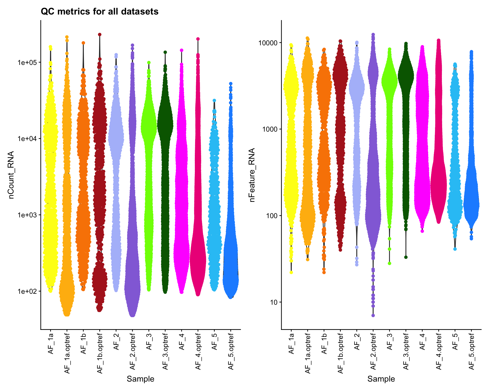
seu@meta.data %>%
ggplot(aes(x = Donor,
y = nCount_RNA)) +
geom_violin(scale = "area") +
geom_quasirandom(aes(color = Donor)) +
scale_y_log10() +
theme_cowplot(12) +
scale_colour_manual(values = ALL_DONORS_COLOURS) +
NoLegend() +
rotate_x_labels +
ggtitle("QC metrics by donor") +
ylab("Library size") -> p3
seu@meta.data %>%
ggplot(aes(x = Donor,
y = nFeature_RNA)) +
geom_violin(scale = "area") +
geom_quasirandom(aes(color = Donor)) +
scale_y_log10() +
theme_cowplot(12) +
scale_colour_manual(values = ALL_DONORS_COLOURS) +
NoLegend() +
rotate_x_labels +
ylab("Number of detected genes") -> p4
p3 | p4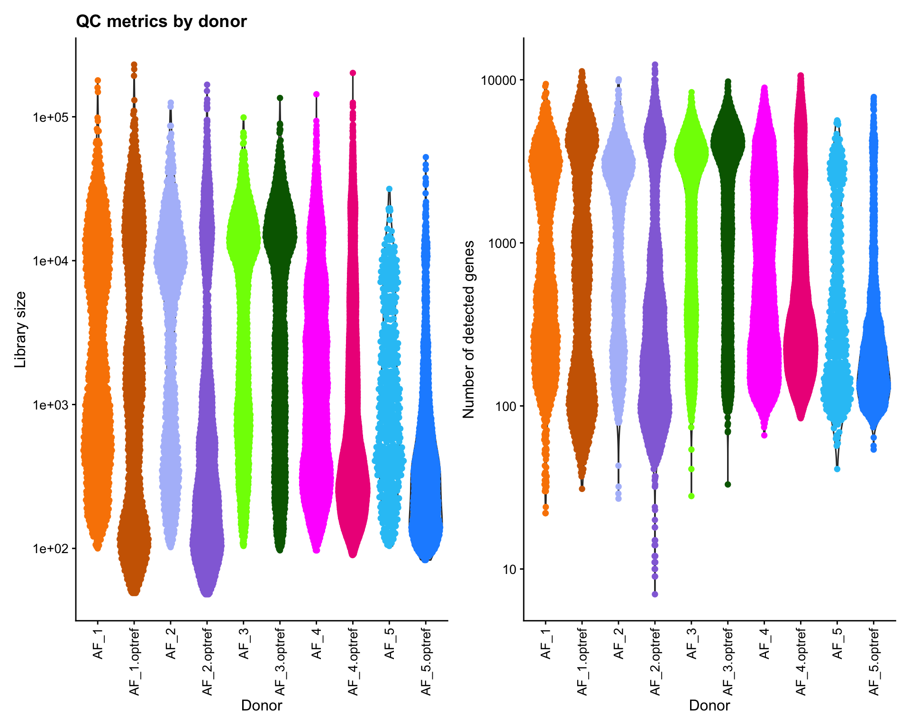
seu@meta.data %>%
ggplot(aes(x = Sample,
fill = Sample)) +
geom_bar() +
geom_text(stat="count", aes(label = ..count..), vjust = -0.25) +
theme_cowplot(12) +
scale_fill_manual(values = ALL_SAMPLES_COLOURS) +
NoLegend() +
rotate_x_labels +
ggtitle("Number of cells per sample for all datasets") -> p5
p5Warning: The dot-dot notation (`..count..`) was deprecated in ggplot2 3.4.0.
ℹ Please use `after_stat(count)` instead.
This warning is displayed once per session.
Call `lifecycle::last_lifecycle_warnings()` to see where this warning was
generated.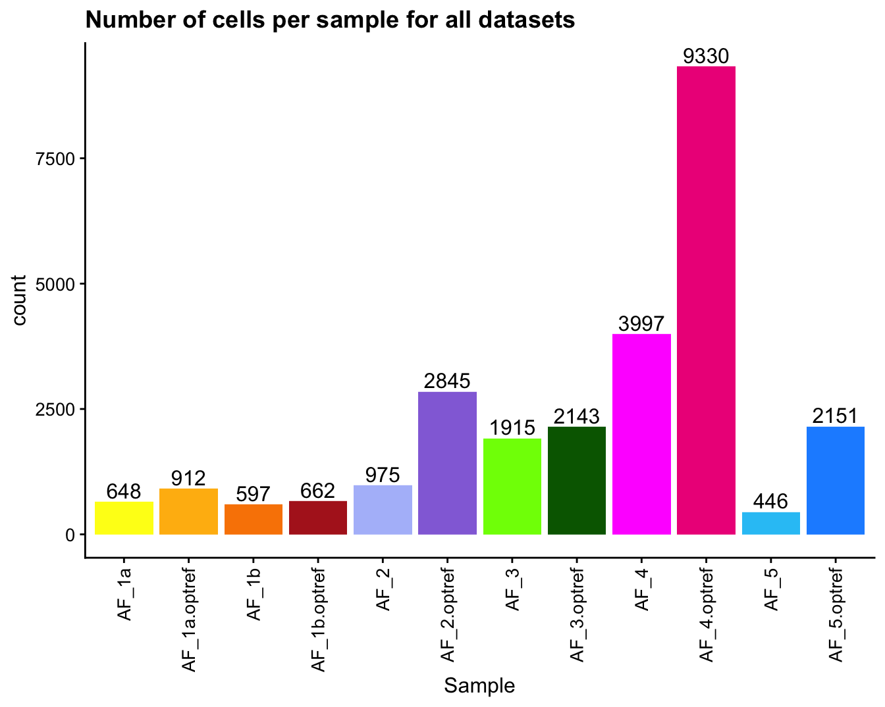
seu@meta.data %>%
ggplot(aes(x = Donor,
fill = Donor)) +
geom_bar() +
geom_text(stat="count", aes(label = ..count..), vjust = -0.25) +
theme_cowplot(12) +
scale_fill_manual(values = ALL_DONORS_COLOURS) +
NoLegend() +
ggtitle("Number of cells per donor") +
rotate_x_labels +
ylab("Count") -> p6
p6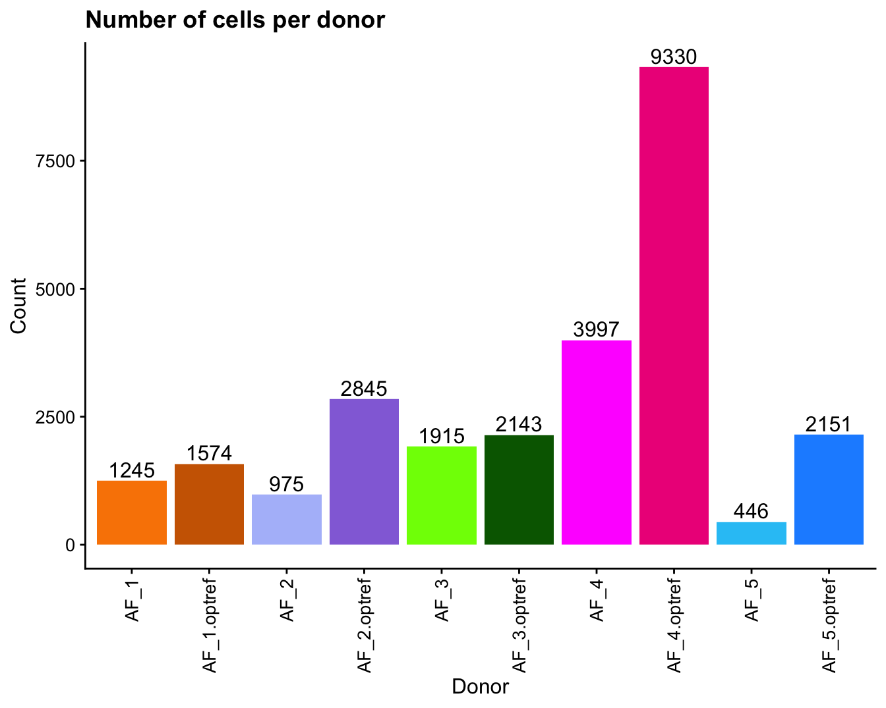
p6 | p3 | p4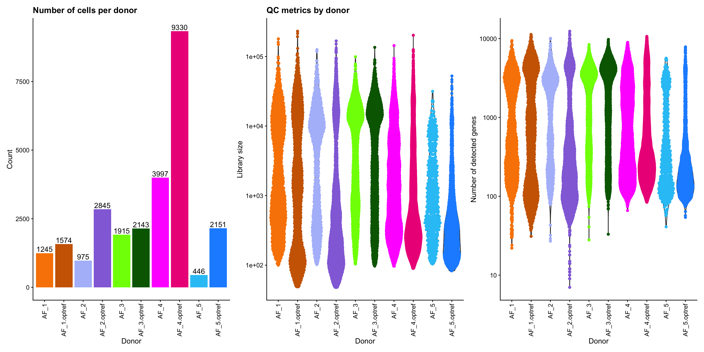
cellDifference <- function(n_cells) {
n_cells.names <- names(n_cells)
n_cells.counts <- unname(n_cells)
for (i in seq(2, 10, by = 2)) {
cat("Sample name:", n_cells.names[i-1], "\n")
cat("Difference in cell number:", n_cells.counts[i] - n_cells.counts[i-1], "\n")
cat("Percentage difference:", (n_cells.counts[i] - n_cells.counts[i-1]) / n_cells.counts[i-1] * 100, "%\n")
cat("\n")
}
}
n_cells <- table(seu$Donor)
cellDifference(n_cells)Sample name: AF_1
Difference in cell number: 329
Percentage difference: 26.4257 %
Sample name: AF_2
Difference in cell number: 1870
Percentage difference: 191.7949 %
Sample name: AF_3
Difference in cell number: 228
Percentage difference: 11.90601 %
Sample name: AF_4
Difference in cell number: 5333
Percentage difference: 133.4251 %
Sample name: AF_5
Difference in cell number: 1705
Percentage difference: 382.287 %Following on from above, standard quality control processes such as filtering of cells with high mitochondrial proportion, low library size and few detected genes were performed on all samples. Non-“optref” samples were also filtered using the DropletQC package to remove damaged cells and provided additional empty droplet filtering. For details, please see Supplementary Analysis pages 1b to 1d linked on this page.
object <- here("data", "workflow", "AmnioSC_ALL_optimised_ref_comparison.Preprocessed_merged.Seurat.rds")
if (!file.exists(object) | RERUN_ALL) {
# load in datasets
sce_data1 <- readRDS(here("data", "workflow", "AmnioSC_01.Preprocess.SCE.rds"))
sce_data1_optimised_ref <- readRDS(here("data", "workflow", "AmnioSC_01_optimised_ref.Preprocess.SCE.rds"))
sce_data3 <- readRDS(here("data", "workflow", "AmnioSC_03.Preprocess.SCE.rds"))
sce_data3_optimised_ref <- readRDS(here("data", "workflow", "AmnioSC_03_optimised_ref.Preprocess.SCE.rds"))
sce_data4 <- readRDS(here("data", "workflow", "AmnioSC_04.Preprocess.SCE.rds"))
sce_data4_optimised_ref <- readRDS(here("data", "workflow",
"AmnioSC_04_optimised_ref.Preprocess.SCE.rds"))
sce_data1_optimised_ref$Sample <- paste0(sce_data1_optimised_ref$Sample, "_optref")
sce_data1_optimised_ref$Barcode <- paste0(sce_data1_optimised_ref$Barcode, "_optref")
sce_data3_optimised_ref$Sample <- paste0(sce_data3_optimised_ref$Sample, "_optref")
sce_data3_optimised_ref$Barcode <- paste0(sce_data3_optimised_ref$Barcode, "_optref")
sce_data4_optimised_ref$Sample <- paste0(sce_data4_optimised_ref$Sample, "_optref")
sce_data4_optimised_ref$Barcode <- paste0(sce_data4_optimised_ref$Barcode, "_optref")
# add in batch information
sce_data1$Dataset <- "dataset_01"
sce_data1_optimised_ref$Dataset <- "dataset_01_optref"
sce_data3$Dataset <- "dataset_03"
sce_data3_optimised_ref$Dataset <- "dataset_03_optref"
sce_data4$Dataset <- "dataset_04"
sce_data4_optimised_ref$Dataset <- "dataset_04_optref"
# distinguish between the cell names of each dataset (prevents duplicate names)
colnames(sce_data1) <- paste0("01_", colnames(sce_data1))
colnames(sce_data1_optimised_ref) <- paste0("01_optref_", colnames(sce_data1_optimised_ref))
colnames(sce_data3) <- paste0("03_", colnames(sce_data3))
colnames(sce_data3_optimised_ref) <- paste0("03_optref_", colnames(sce_data3_optimised_ref))
colnames(sce_data4) <- paste0("04_", colnames(sce_data4))
colnames(sce_data4_optimised_ref) <- paste0("04_optref_", colnames(sce_data4_optimised_ref))
# identify genes in common between the datasets
common_genes <- Reduce(intersect, list(rownames(sce_data1),
rownames(sce_data1_optimised_ref),
rownames(sce_data3),
rownames(sce_data3_optimised_ref),
rownames(sce_data4),
rownames(sce_data4_optimised_ref)))
sce_data1 <- sce_data1[common_genes,]
sce_data1_optimised_ref <- sce_data1_optimised_ref[common_genes,]
sce_data3 <- sce_data3[common_genes,]
sce_data3_optimised_ref <- sce_data3_optimised_ref[common_genes,]
sce_data4 <- sce_data4[common_genes,]
sce_data4_optimised_ref <- sce_data4_optimised_ref[common_genes,]
sce <- SingleCellExperiment(list(counts = cbind(counts(sce_data1),
counts(sce_data1_optimised_ref),
counts(sce_data3),
counts(sce_data3_optimised_ref),
counts(sce_data4),
counts(sce_data4_optimised_ref))),
colData = data.frame(
Sample = c(sce_data1$Sample,
sce_data1_optimised_ref$Sample,
sce_data3$Sample,
sce_data3_optimised_ref$Sample,
sce_data4$Sample,
sce_data4_optimised_ref$Sample),
Dataset = c(sce_data1$Dataset,
sce_data1_optimised_ref$Dataset,
sce_data3$Dataset,
sce_data3_optimised_ref$Dataset,
sce_data4$Dataset,
sce_data4_optimised_ref$Dataset),
Barcode = c(sce_data1$Barcode,
sce_data1_optimised_ref$Barcode,
sce_data3$Barcode,
sce_data3_optimised_ref$Barcode,
sce_data4$Barcode,
sce_data4_optimised_ref$Barcode)))
# create Seurat object
seu <- CreateSeuratObject(counts = counts(sce),
meta.data = data.frame(Sample = sce$Sample,
Dataset = sce$Dataset,
Barcode = sce$Barcode,
row.names = colnames(sce)))
seu$Donor <- ifelse(seu$Sample %in% c("1AFa", "1AFb"), "1AF", seu$Sample)
seu$Donor <- ifelse(seu$Sample %in% c("1AFa_optref", "1AFb_optref"), "1AF_optref", seu$Donor)
saveRDS(seu, object)
} else {
seu <- readRDS(object)
}seu$Sample <- unname(SAMPLE.PAPER[seu$Sample])
seu$Donor <- unname(DONOR.PAPER[seu$Donor])seu@meta.data %>%
ggplot(aes(x = Sample,
y = nCount_RNA)) +
geom_violin(scale = "area") +
geom_quasirandom(aes(color = Sample)) +
scale_y_log10() +
theme_cowplot(12) +
scale_colour_manual(values = ALL_SAMPLES_COLOURS) +
NoLegend() +
rotate_x_labels +
ggtitle("QC metrics for all datasets") -> p1
seu@meta.data %>%
ggplot(aes(x = Sample,
y = nFeature_RNA)) +
geom_violin(scale = "area") +
geom_quasirandom(aes(color = Sample)) +
scale_y_log10() +
theme_cowplot(12) +
rotate_x_labels +
scale_colour_manual(values = ALL_SAMPLES_COLOURS) +
NoLegend() -> p2
p1 | p2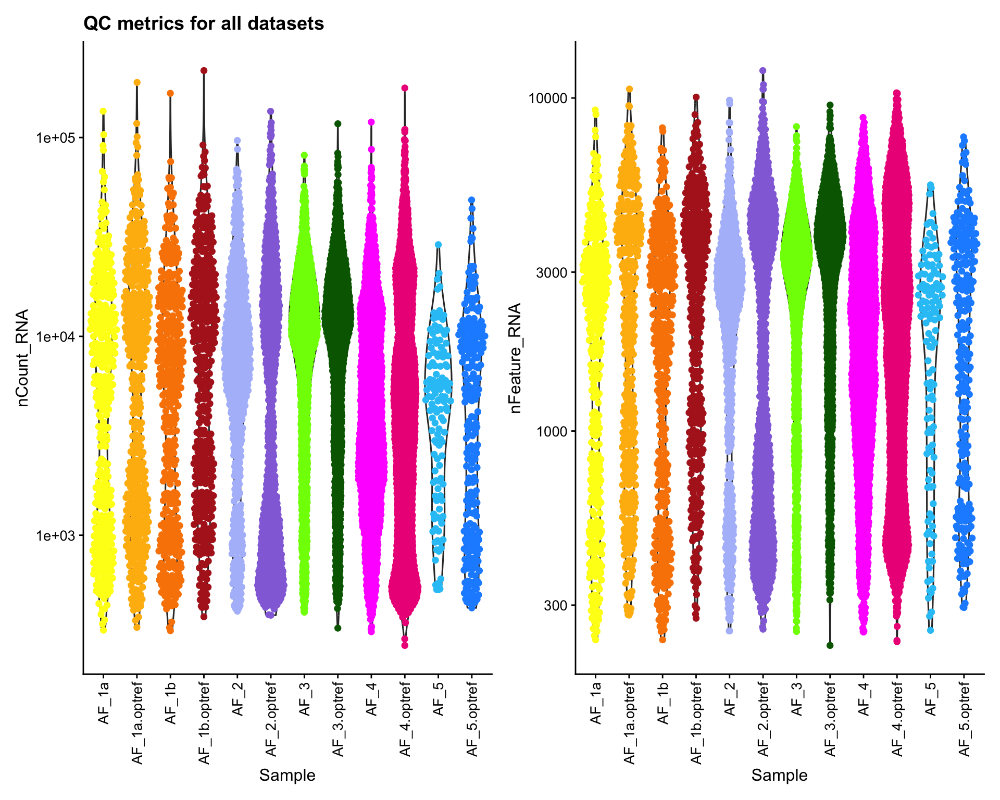
seu@meta.data %>%
ggplot(aes(x = Donor,
y = nCount_RNA)) +
geom_violin(scale = "area") +
geom_quasirandom(aes(color = Donor)) +
scale_y_log10() +
theme_cowplot(12) +
scale_colour_manual(values = ALL_DONORS_COLOURS) +
NoLegend() +
rotate_x_labels +
ggtitle("QC metrics by donor") +
ylab("Library size") -> p3
seu@meta.data %>%
ggplot(aes(x = Donor,
y = nFeature_RNA)) +
geom_violin(scale = "area") +
geom_quasirandom(aes(color = Donor)) +
scale_y_log10() +
theme_cowplot(12) +
scale_colour_manual(values = ALL_DONORS_COLOURS) +
NoLegend() +
rotate_x_labels +
ylab("Number of detected genes") -> p4
p3 | p4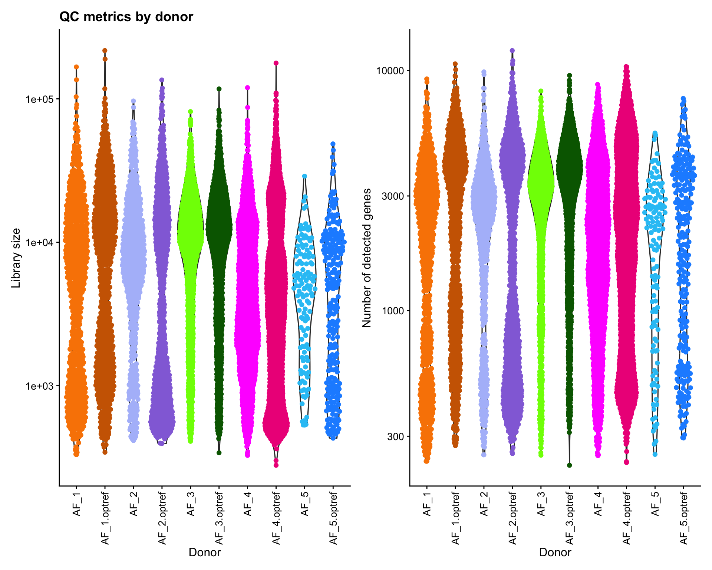
seu@meta.data %>%
ggplot(aes(x = Sample,
fill = Sample)) +
geom_bar() +
geom_text(stat="count", aes(label = ..count..), vjust = -0.25) +
theme_cowplot(12) +
scale_fill_manual(values = ALL_SAMPLES_COLOURS) +
NoLegend() +
rotate_x_labels +
ggtitle("Number of cells per sample for all datasets") -> p5
p5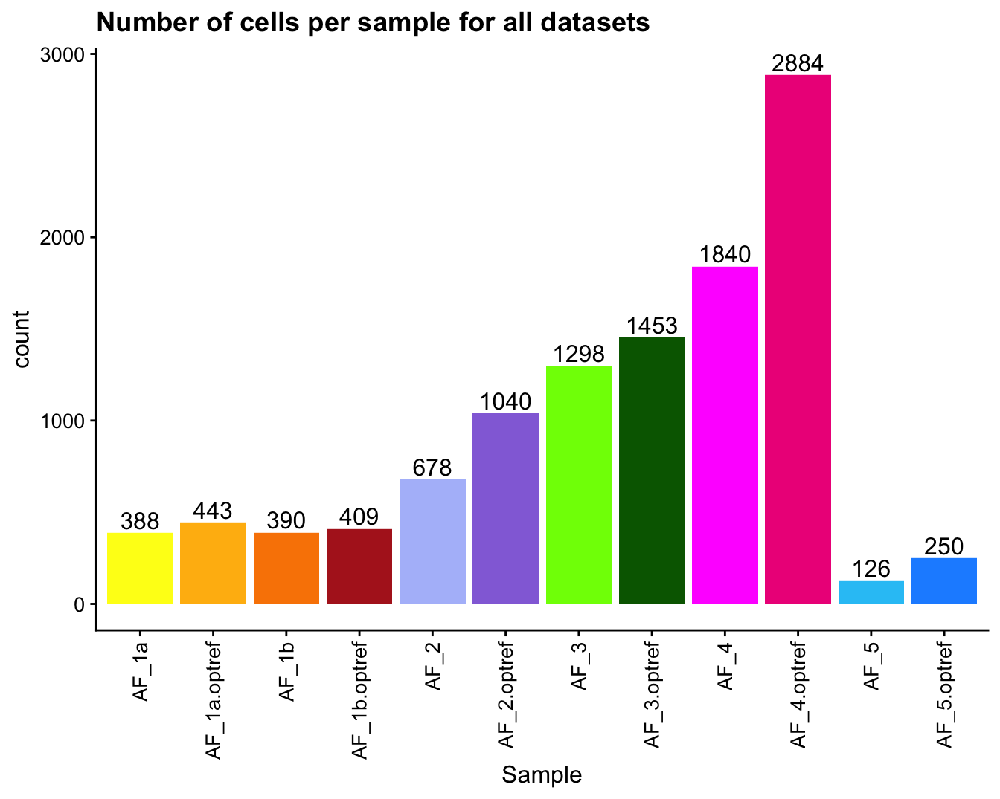
seu@meta.data %>%
ggplot(aes(x = Donor,
fill = Donor)) +
geom_bar() +
geom_text(stat="count", aes(label = ..count..), vjust = -0.25) +
theme_cowplot(12) +
scale_fill_manual(values = ALL_DONORS_COLOURS) +
NoLegend() +
ggtitle("Number of cells per donor") +
rotate_x_labels +
ylab("Count") -> p6
p6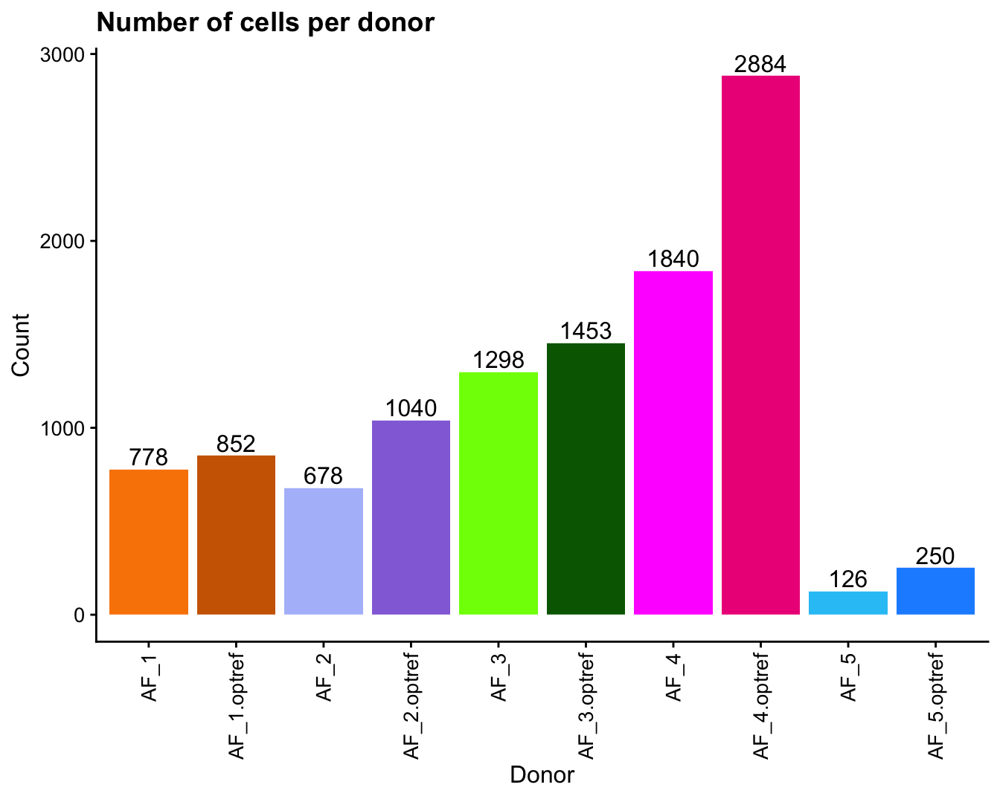
p6 | p3 | p4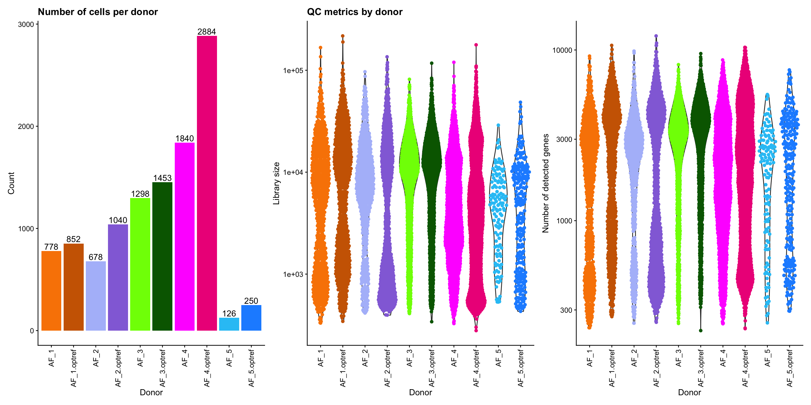
n_cells <- table(seu$Donor)
cellDifference(n_cells)Sample name: AF_1
Difference in cell number: 74
Percentage difference: 9.511568 %
Sample name: AF_2
Difference in cell number: 362
Percentage difference: 53.39233 %
Sample name: AF_3
Difference in cell number: 155
Percentage difference: 11.94145 %
Sample name: AF_4
Difference in cell number: 1044
Percentage difference: 56.73913 %
Sample name: AF_5
Difference in cell number: 124
Percentage difference: 98.4127 %Celltypist uses a logistic regression classifier to transfer cell type labels based on an in-built pan-foetal reference dataset that contains cells from a variety of tissues, including foetal skin.
Celltypist was run via command line using the
Pan_Fetal_Human reference model and majority voting
options.
# extract counts matrix from Seurat object
object <- here("data", "workflow", "AmnioSC_ALL_optimised_ref_comparison.Preprocessed_merged.Counts.csv")
if (!file.exists(object) | RERUN_ALL) {
seu_counts <- GetAssayData(seu[["RNA"]], "counts")
write.csv(seu_counts, object)
}object <- here("data", "workflow",
"AmnioSC_ALL_optimised_ref_comparison.Celltypist_annotated.Seurat.rds")
if (!file.exists(object) | RERUN_ALL) {
predicted_labels <- read.csv(here("celltypist",
"output_ALL_optimised_ref_comparison_pan_fetal",
"predicted_labels.csv"))
probability_matrix <- read.csv(here("celltypist",
"output_ALL_optimised_ref_comparison_pan_fetal",
"probability_matrix.csv"))
decision_matrix <- read.csv(here("celltypist",
"output_ALL_optimised_ref_comparison_pan_fetal",
"decision_matrix.csv"))
predicted_labels <- createCelltypistResultsDF(predicted_labels,
probability_matrix,
decision_matrix,
"pan_fetal")
# reorder to ensure names match Seurat object
predicted_labels <- predicted_labels[colnames(seu),]
seu <- AddMetaData(seu, predicted_labels)
seu$pan_fetal.predicted_labels <- sortedFactor(seu$pan_fetal.predicted_labels)
seu$pan_fetal.majority_voting <- sortedFactor(seu$pan_fetal.majority_voting)
saveRDS(seu, object)
} else {
seu <- readRDS(object)
}These are the cell type labels prior to majority voting.
# labels after initial prediction
table(seu$pan_fetal.predicted_labels)
KERATINOCYTE MACROPHAGE_LYVE1_HIGH
4591 1527
CYCLING_EPITHELIUM ILC3
1446 556
MID_ERY FIBROBLAST
315 202
TYPE_3_INNATE_T CD4.T
189 184
EPITHELIUM LATE_ERY
182 175
YS_ERY CD8.T
156 119
MAST_CELL HIGH_MITO
110 97
MATURE_B NK
95 91
LOW_QUALITY_MID_ERY_.HIGH_RIBO. MACROPHAGE_PROLIFERATING
82 82
MACROPHAGE_MHCII_HIGH MONOCYTE_I_CXCR4
71 65
TYPE_1_INNATE_T DOUBLET_LYMPHOID_MACROPHAGE
54 52
TREG B1
38 36
DC2 DC1
36 33
CYCLING_T LOW_QUALITY
32 27
ENDOTHELIUM MYELOCYTE
25 23
DEVELOPING_NEPHRON EOSINOPHIL_BASOPHIL
22 22
LATE_MK EARLY_ERY
22 21
VSMC_PERICYTE HEPATOCYTE
21 19
HSC_MPP MONOCYTE_II_CCR2
18 18
LANGERHANS_CELLS ILC2
16 15
CYCLING_NK PROMYELOCYTE
14 13
OSTEOCLAST ENTEROENDOCRINE
11 10
LARGE_PRE_B LOW_QUALITY_MACROPHAGE
10 10
MESOTHELIUM MOP
9 9
MYOFIBROBLAST CYCLING_DC
9 8
CYCLING_ILC CYCLING_YS_ERY
8 8
LATE_PRO_B MONOCYTE_III_IL1B
8 8
PROMONOCYTE CYCLING_FIBROBLAST
8 7
MACROPHAGE_ERY MACROPHAGE_KUPFFER_LIKE
7 6
MACROPHAGE_TREM2 MIGRATORY_DC
6 6
PLASMA_B SKELETAL_MUSCLE
6 6
SMALL_PRE_B CMP
6 5
CYCLING_MPP CYCLING_PDC
5 5
EARLY_MK CYCLING_B
5 4
DN.early._T DN.Q._T
4 4
PDC DC_PROGENITOR
4 3
GLIAL GMP
3 3
MACROPHAGE_IRON_RECYCLING MACROPHAGE_PERI
3 3
NEURON SMOOTH_MUSCLE
3 3
CD8AA DOUBLETS_FIBRO_ERY
2 2
LOW_Q_INCONSISTENT MEMP
2 2
MEP OSTEOBLAST
2 2
PLACENTAL_CONTAMINANTS PRO_B
2 2
CYCLING_MEMP DOUBLET
1 1
DOUBLET_ENDOTHELIUM_ERYTHROCYTE DP.P._T
1 1
DP.Q._T HEPATOCYTE.LIKE
1 1
IMMATURE_B LMPP_MLP
1 1
MELANOCYTE NEUTROPHIL
1 1
PRE_PRO_B
1 seu@meta.data %>%
ggplot(aes(x = pan_fetal.predicted_labels, fill = pan_fetal.predicted_labels)) +
geom_bar() +
geom_text(stat='count', aes(label=..count..), vjust=-0.25) +
theme_cowplot(12) +
scale_fill_manual(values = ALL_CELL_TYPE_COLOURS) +
no_legend +
rotate_x_labels +
ylab("Count") +
ggtitle("Number of cells by cell type")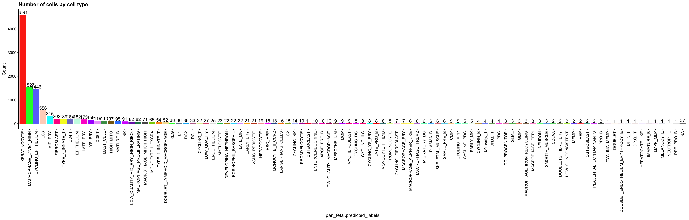
p1 <- seu@meta.data %>%
ggplot(aes(x = pan_fetal.predicted_labels,
y = pan_fetal.prob_vote)) +
geom_violin(scale = "area") +
geom_quasirandom(aes(color = pan_fetal.predicted_labels)) +
theme_cowplot(12) +
scale_colour_manual(values = ALL_CELL_TYPE_COLOURS) +
NoLegend() +
rotate_x_labels +
ggtitle("Celltypist labels confidence scores (predicted labels)")
p2 <- seu@meta.data %>%
ggplot(aes(x = pan_fetal.predicted_labels,
y = pan_fetal.decision_vote)) +
geom_violin(scale = "area") +
geom_quasirandom(aes(color = pan_fetal.predicted_labels)) +
theme_cowplot(12) +
scale_colour_manual(values = ALL_CELL_TYPE_COLOURS) +
NoLegend() +
rotate_x_labels
p1 | p2Warning: Removed 37 rows containing non-finite outside the scale range
(`stat_ydensity()`).Warning: Groups with fewer than two datapoints have been dropped.
ℹ Set `drop = FALSE` to consider such groups for position adjustment purposes.
Groups with fewer than two datapoints have been dropped.
ℹ Set `drop = FALSE` to consider such groups for position adjustment purposes.
Groups with fewer than two datapoints have been dropped.
ℹ Set `drop = FALSE` to consider such groups for position adjustment purposes.
Groups with fewer than two datapoints have been dropped.
ℹ Set `drop = FALSE` to consider such groups for position adjustment purposes.
Groups with fewer than two datapoints have been dropped.
ℹ Set `drop = FALSE` to consider such groups for position adjustment purposes.
Groups with fewer than two datapoints have been dropped.
ℹ Set `drop = FALSE` to consider such groups for position adjustment purposes.
Groups with fewer than two datapoints have been dropped.
ℹ Set `drop = FALSE` to consider such groups for position adjustment purposes.
Groups with fewer than two datapoints have been dropped.
ℹ Set `drop = FALSE` to consider such groups for position adjustment purposes.
Groups with fewer than two datapoints have been dropped.
ℹ Set `drop = FALSE` to consider such groups for position adjustment purposes.
Groups with fewer than two datapoints have been dropped.
ℹ Set `drop = FALSE` to consider such groups for position adjustment purposes.
Groups with fewer than two datapoints have been dropped.
ℹ Set `drop = FALSE` to consider such groups for position adjustment purposes.Warning: Removed 37 rows containing missing values or values outside the scale range
(`position_quasirandom()`).Warning: Removed 37 rows containing non-finite outside the scale range
(`stat_ydensity()`).Warning: Groups with fewer than two datapoints have been dropped.
ℹ Set `drop = FALSE` to consider such groups for position adjustment purposes.
Groups with fewer than two datapoints have been dropped.
ℹ Set `drop = FALSE` to consider such groups for position adjustment purposes.
Groups with fewer than two datapoints have been dropped.
ℹ Set `drop = FALSE` to consider such groups for position adjustment purposes.
Groups with fewer than two datapoints have been dropped.
ℹ Set `drop = FALSE` to consider such groups for position adjustment purposes.
Groups with fewer than two datapoints have been dropped.
ℹ Set `drop = FALSE` to consider such groups for position adjustment purposes.
Groups with fewer than two datapoints have been dropped.
ℹ Set `drop = FALSE` to consider such groups for position adjustment purposes.
Groups with fewer than two datapoints have been dropped.
ℹ Set `drop = FALSE` to consider such groups for position adjustment purposes.
Groups with fewer than two datapoints have been dropped.
ℹ Set `drop = FALSE` to consider such groups for position adjustment purposes.
Groups with fewer than two datapoints have been dropped.
ℹ Set `drop = FALSE` to consider such groups for position adjustment purposes.
Groups with fewer than two datapoints have been dropped.
ℹ Set `drop = FALSE` to consider such groups for position adjustment purposes.
Groups with fewer than two datapoints have been dropped.
ℹ Set `drop = FALSE` to consider such groups for position adjustment purposes.Warning: Removed 37 rows containing missing values or values outside the scale range
(`position_quasirandom()`).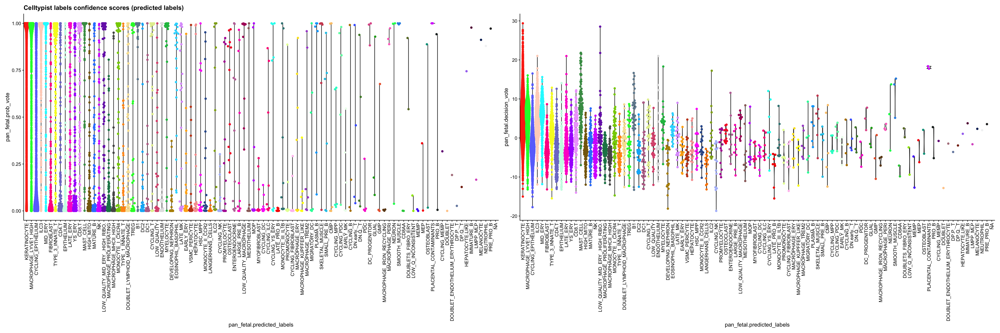
p1 <- seu@meta.data %>%
ggplot(aes(x = pan_fetal.predicted_labels, y = nCount_RNA)) +
geom_violin(scale = "area") +
geom_quasirandom(aes(colour = pan_fetal.predicted_labels)) +
scale_y_log10() +
theme_cowplot(12) +
scale_colour_manual(values = ALL_CELL_TYPE_COLOURS) +
no_legend +
rotate_x_labels +
ggtitle("QC metrics by cell type")
p2 <- seu@meta.data %>%
ggplot(aes(x = pan_fetal.predicted_labels, y = nFeature_RNA)) +
geom_violin(scale = "area") +
geom_quasirandom(aes(colour = pan_fetal.predicted_labels)) +
scale_y_log10() +
theme_cowplot(12) +
rotate_x_labels +
scale_colour_manual(values = ALL_CELL_TYPE_COLOURS) +
no_legend
p1 + p2Warning: Groups with fewer than two datapoints have been dropped.
ℹ Set `drop = FALSE` to consider such groups for position adjustment purposes.
Groups with fewer than two datapoints have been dropped.
ℹ Set `drop = FALSE` to consider such groups for position adjustment purposes.
Groups with fewer than two datapoints have been dropped.
ℹ Set `drop = FALSE` to consider such groups for position adjustment purposes.
Groups with fewer than two datapoints have been dropped.
ℹ Set `drop = FALSE` to consider such groups for position adjustment purposes.
Groups with fewer than two datapoints have been dropped.
ℹ Set `drop = FALSE` to consider such groups for position adjustment purposes.
Groups with fewer than two datapoints have been dropped.
ℹ Set `drop = FALSE` to consider such groups for position adjustment purposes.
Groups with fewer than two datapoints have been dropped.
ℹ Set `drop = FALSE` to consider such groups for position adjustment purposes.
Groups with fewer than two datapoints have been dropped.
ℹ Set `drop = FALSE` to consider such groups for position adjustment purposes.
Groups with fewer than two datapoints have been dropped.
ℹ Set `drop = FALSE` to consider such groups for position adjustment purposes.
Groups with fewer than two datapoints have been dropped.
ℹ Set `drop = FALSE` to consider such groups for position adjustment purposes.
Groups with fewer than two datapoints have been dropped.
ℹ Set `drop = FALSE` to consider such groups for position adjustment purposes.
Groups with fewer than two datapoints have been dropped.
ℹ Set `drop = FALSE` to consider such groups for position adjustment purposes.
Groups with fewer than two datapoints have been dropped.
ℹ Set `drop = FALSE` to consider such groups for position adjustment purposes.
Groups with fewer than two datapoints have been dropped.
ℹ Set `drop = FALSE` to consider such groups for position adjustment purposes.
Groups with fewer than two datapoints have been dropped.
ℹ Set `drop = FALSE` to consider such groups for position adjustment purposes.
Groups with fewer than two datapoints have been dropped.
ℹ Set `drop = FALSE` to consider such groups for position adjustment purposes.
Groups with fewer than two datapoints have been dropped.
ℹ Set `drop = FALSE` to consider such groups for position adjustment purposes.
Groups with fewer than two datapoints have been dropped.
ℹ Set `drop = FALSE` to consider such groups for position adjustment purposes.
Groups with fewer than two datapoints have been dropped.
ℹ Set `drop = FALSE` to consider such groups for position adjustment purposes.
Groups with fewer than two datapoints have been dropped.
ℹ Set `drop = FALSE` to consider such groups for position adjustment purposes.
Groups with fewer than two datapoints have been dropped.
ℹ Set `drop = FALSE` to consider such groups for position adjustment purposes.
Groups with fewer than two datapoints have been dropped.
ℹ Set `drop = FALSE` to consider such groups for position adjustment purposes.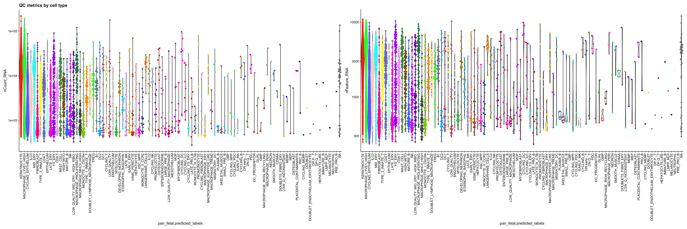
p1 <- seu@meta.data %>%
ggplot(aes(x = pan_fetal.predicted_labels, fill = pan_fetal.predicted_labels)) +
geom_bar() +
geom_text(stat='count', aes(label=..count..), hjust=-0.25) +
theme_cowplot(12) +
scale_fill_manual(values = ALL_CELL_TYPE_COLOURS) +
no_legend +
ylab("Count") +
ylim(0, max(table(seu$pan_fetal.predicted_labels))+500) +
coord_flip() +
ggtitle("Number of cells by cell type")
p2 <- seu@meta.data %>%
ggplot(aes(x = pan_fetal.predicted_labels, fill = Sample)) +
geom_bar(position = "fill") +
theme_cowplot(12) +
no_y_labels +
bottom_legend +
ylab("Proportion") +
coord_flip() +
scale_fill_manual(values = ALL_SAMPLES_COLOURS) +
ggtitle("Cell type proportions by sample")
p3 <- seu@meta.data %>%
ggplot(aes(x = pan_fetal.predicted_labels, fill = Donor)) +
geom_bar(position = "fill") +
theme_cowplot(12) +
no_y_labels +
bottom_legend +
ylab("Proportion") +
coord_flip() +
scale_fill_manual(values = ALL_DONORS_COLOURS[seu$Donor]) +
ggtitle("Cell type proportions by donor")
p1 + p2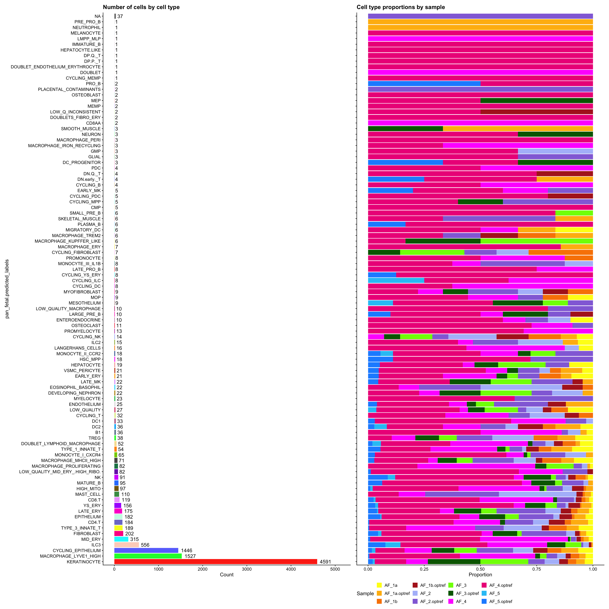
p1 + p3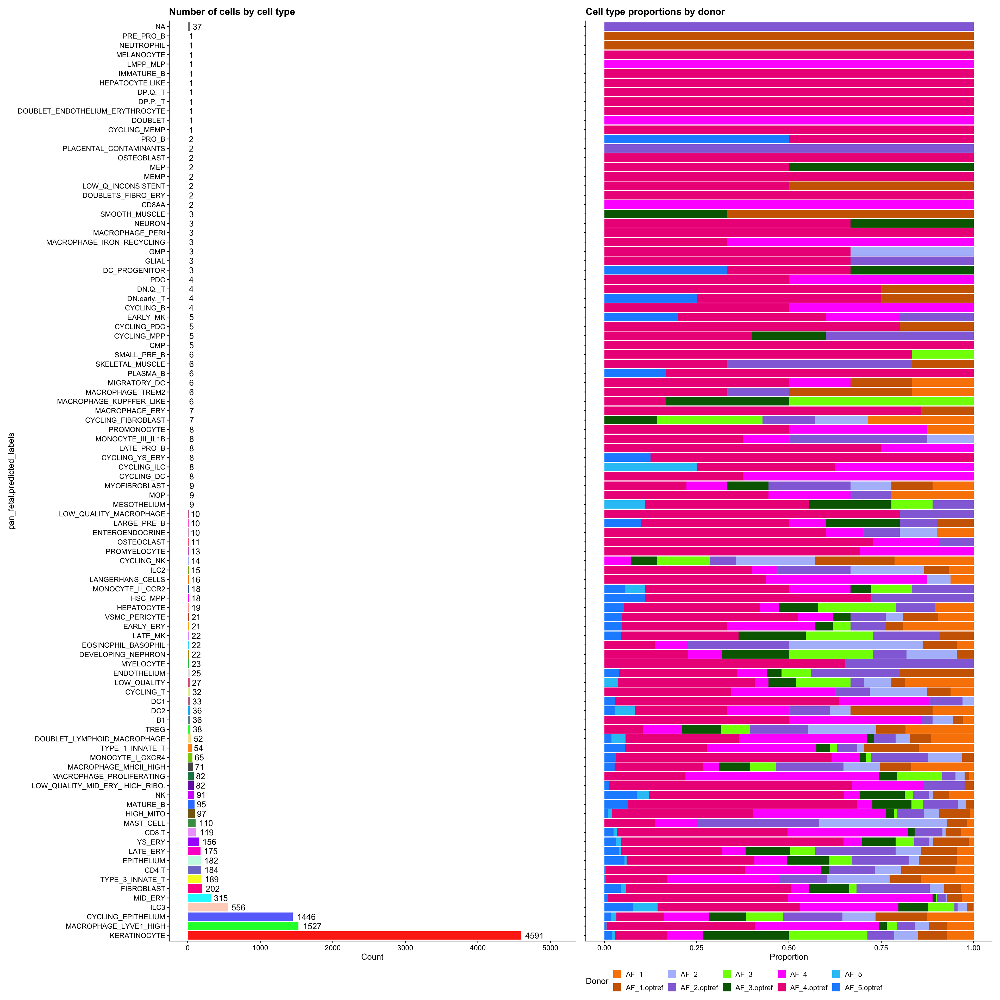
p1 <- seu@meta.data %>%
ggplot(aes(x = Donor, fill = pan_fetal.predicted_labels)) +
geom_bar() +
theme_cowplot(12) +
scale_fill_manual(values = ALL_CELL_TYPE_COLOURS[levels(seu$pan_fetal.predicted_labels)]) +
no_legend +
ggtitle("Number of cells per cell type by donor") +
rotate_x_labels_45
p2 <- seu@meta.data %>%
ggplot(aes(x = Donor, fill = pan_fetal.predicted_labels)) +
geom_bar(position = "fill") +
theme_cowplot(12) +
scale_fill_manual(values = ALL_CELL_TYPE_COLOURS[levels(seu$pan_fetal.predicted_labels)]) +
guides(fill = guide_legend(ncol = 1)) +
ggtitle("Propotion of cell types by donor") +
rotate_x_labels_45
p1 + p2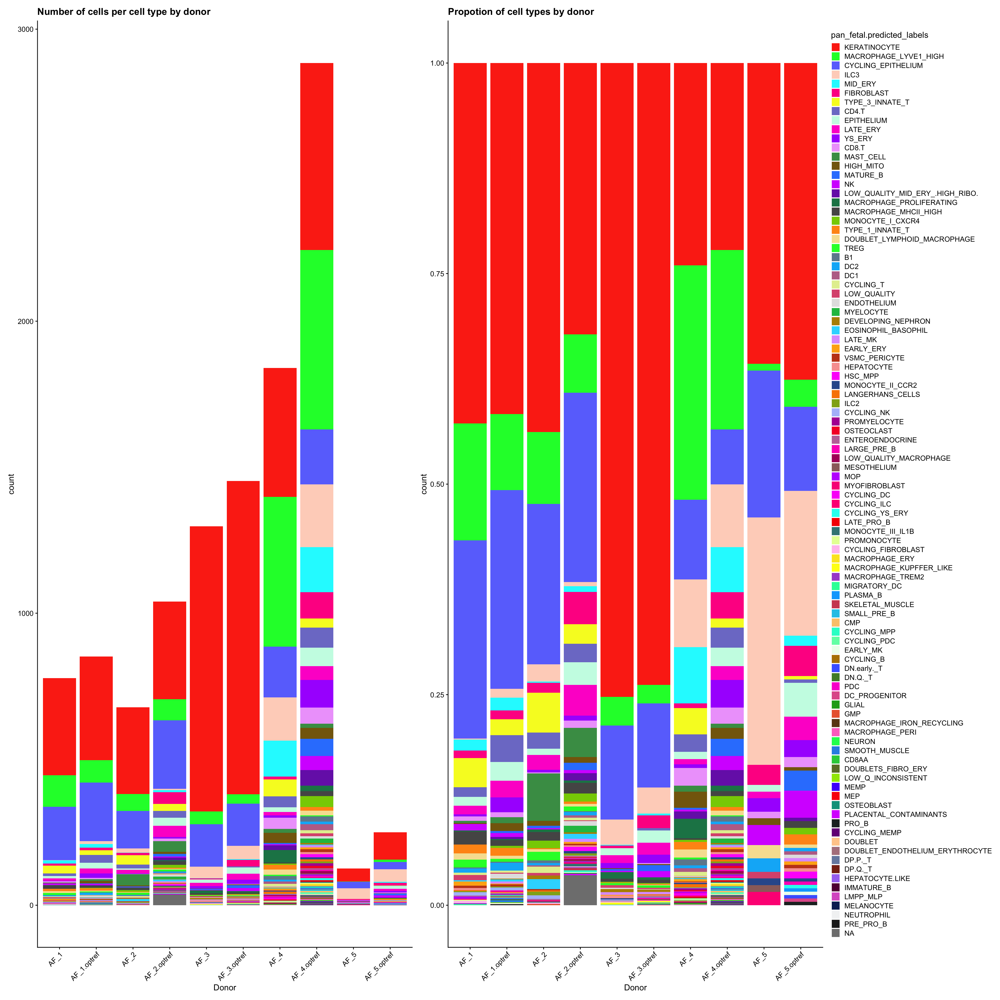
Majority voting involves overclustering the dataset and assigning the same cell type label within these clsuters based on highest vote.
# labels after majority voting
table(seu$pan_fetal.majority_voting)
KERATINOCYTE MACROPHAGE_LYVE1_HIGH CYCLING_EPITHELIUM
5902 1989 1169
ILC3 MID_ERY TYPE_3_INNATE_T
597 367 355
LATE_ERY CD8.T MAST_CELL
286 204 105
B1 CYCLING_T EOSINOPHIL_BASOPHIL
66 39 29
CD4.T FIBROBLAST MONOCYTE_I_CXCR4
22 19 13 seu@meta.data %>%
ggplot(aes(x = pan_fetal.majority_voting, fill = pan_fetal.majority_voting)) +
geom_bar() +
geom_text(stat='count', aes(label=..count..), vjust=-0.25) +
theme_cowplot(12) +
scale_fill_manual(values = ALL_CELL_TYPE_COLOURS) +
no_legend +
rotate_x_labels +
ylab("Count") +
ggtitle("Number of cells by cell type")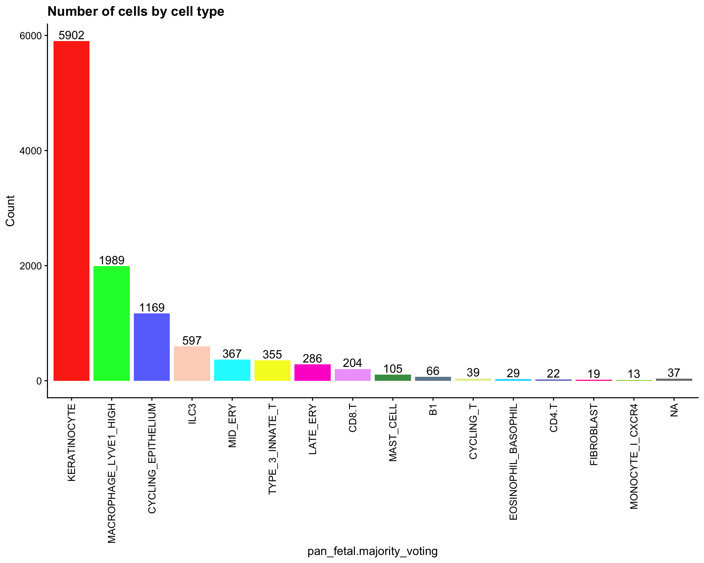
p1 <- seu@meta.data %>%
ggplot(aes(x = pan_fetal.majority_voting,
y = pan_fetal.prob_vote)) +
geom_violin(scale = "area") +
geom_quasirandom(aes(color = pan_fetal.majority_voting)) +
theme_cowplot(12) +
scale_colour_manual(values = ALL_CELL_TYPE_COLOURS) +
NoLegend() +
rotate_x_labels +
ggtitle("Celltypist labels confidence scores (majority voting)")
p2 <- seu@meta.data %>%
ggplot(aes(x = pan_fetal.majority_voting,
y = pan_fetal.decision_vote)) +
geom_violin(scale = "area") +
geom_quasirandom(aes(color = pan_fetal.majority_voting)) +
theme_cowplot(12) +
scale_colour_manual(values = ALL_CELL_TYPE_COLOURS) +
NoLegend() +
rotate_x_labels
p1 | p2Warning: Removed 37 rows containing non-finite outside the scale range
(`stat_ydensity()`).Warning: Removed 37 rows containing missing values or values outside the scale range
(`position_quasirandom()`).Warning: Removed 37 rows containing non-finite outside the scale range
(`stat_ydensity()`).Warning: Removed 37 rows containing missing values or values outside the scale range
(`position_quasirandom()`).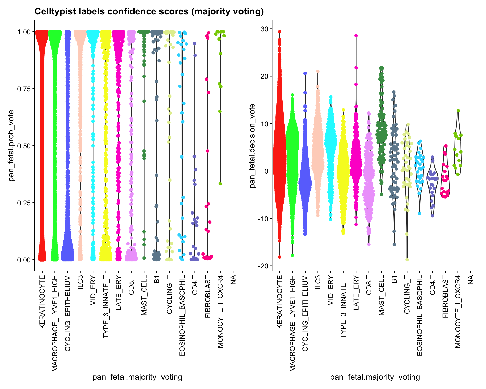
p1 <- seu@meta.data %>%
ggplot(aes(x = Donor,
y = pan_fetal.prob_vote)) +
geom_violin(scale = "area") +
geom_quasirandom(aes(color = Donor)) +
theme_cowplot(12) +
scale_colour_manual(values = ALL_DONORS_COLOURS) +
NoLegend() +
rotate_x_labels +
ggtitle("Celltypist labels confidence scores within donors (majority voting)")
p2 <- seu@meta.data %>%
ggplot(aes(x = Donor,
y = pan_fetal.decision_vote)) +
geom_violin(scale = "area") +
geom_quasirandom(aes(color = Donor)) +
theme_cowplot(12) +
scale_colour_manual(values = ALL_DONORS_COLOURS) +
NoLegend() +
rotate_x_labels
p1 | p2Warning: Removed 37 rows containing non-finite outside the scale range
(`stat_ydensity()`).Warning: Removed 37 rows containing missing values or values outside the scale range
(`position_quasirandom()`).Warning: Removed 37 rows containing non-finite outside the scale range
(`stat_ydensity()`).Warning: Removed 37 rows containing missing values or values outside the scale range
(`position_quasirandom()`).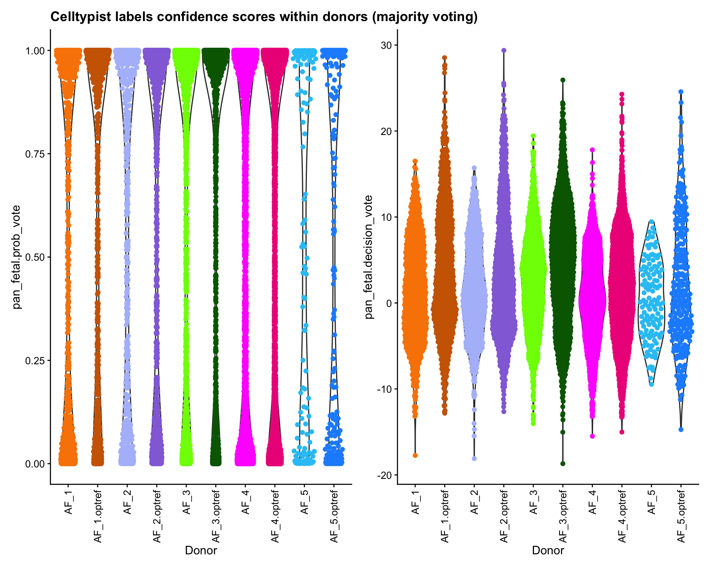
p1 <- seu@meta.data %>%
ggplot(aes(x = pan_fetal.majority_voting, y = nCount_RNA)) +
geom_violin(scale = "area") +
geom_quasirandom(aes(colour = pan_fetal.majority_voting)) +
scale_y_log10() +
theme_cowplot(12) +
scale_colour_manual(values = ALL_CELL_TYPE_COLOURS) +
no_legend +
rotate_x_labels +
ggtitle("QC metrics by cell type")
p2 <- seu@meta.data %>%
ggplot(aes(x = pan_fetal.majority_voting, y = nFeature_RNA)) +
geom_violin(scale = "area") +
geom_quasirandom(aes(colour = pan_fetal.majority_voting)) +
scale_y_log10() +
theme_cowplot(12) +
rotate_x_labels +
scale_colour_manual(values = ALL_CELL_TYPE_COLOURS) +
no_legend
p1 + p2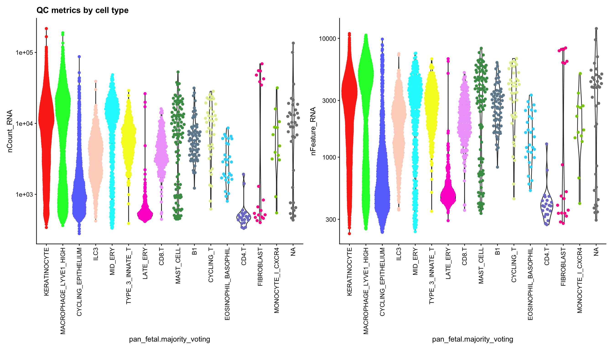
alluvial_df <- createAlluvialLongDF(colnames(seu), seu$pan_fetal.predicted_labels, seu$pan_fetal.majority_voting)Warning: attributes are not identical across measure variables; they will be
droppedggplot(alluvial_df,
aes(x = label, alluvium = names, stratum = label_type, fill = label_type,
label = label_type)) +
geom_flow(stat = "alluvium", lode.guidance = "backward", alpha = 0.5,
segments = 100) +
geom_stratum(alpha = 0.5) +
theme_cowplot(12) +
theme(legend.position = "none") +
scale_fill_manual(values = c(ALL_CELL_TYPE_COLOURS)) +
scale_color_manual(values = c(ALL_CELL_TYPE_COLOURS)) +
ggtitle("Flow between each stage of Celltypist labels") +
geom_text(stat = "stratum", size = 2, check_overlap = TRUE) +
scale_x_discrete(labels = c("pan_fetal.predicted_labels", "pan_fetal.majority_voting")) +
ylab("Number of cells")Warning: No shared levels found between `names(values)` of the manual scale and the
data's colour values.Warning: Removed 2 rows containing missing values or values outside the scale range
(`geom_text()`).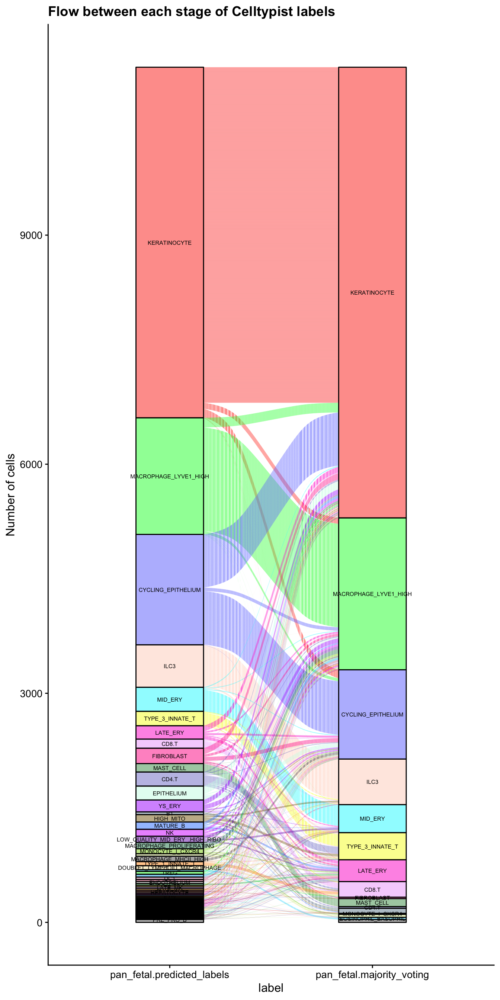
p1 <- seu@meta.data %>%
ggplot(aes(x = pan_fetal.majority_voting, fill = pan_fetal.majority_voting)) +
geom_bar() +
geom_text(stat='count', aes(label=..count..), hjust=-0.25) +
theme_cowplot(12) +
scale_fill_manual(values = ALL_CELL_TYPE_COLOURS) +
no_legend +
ylab("Count") +
ylim(0, unname(max(table(seu$pan_fetal.majority_voting)))) +
coord_flip() +
ggtitle("Number of cells by cell type")
p2 <- seu@meta.data %>%
ggplot(aes(x = pan_fetal.majority_voting, fill = Sample)) +
geom_bar(position = "fill") +
theme_cowplot(12) +
no_y_labels +
bottom_legend +
ylab("Proportion") +
coord_flip() +
scale_fill_manual(values = ALL_SAMPLES_COLOURS) +
ggtitle("Cell type proportions by sample")
p3 <- seu@meta.data %>%
ggplot(aes(x = pan_fetal.majority_voting, fill = Donor)) +
geom_bar(position = "fill") +
theme_cowplot(12) +
no_y_labels +
bottom_legend +
ylab("Proportion") +
coord_flip() +
scale_fill_manual(values = ALL_DONORS_COLOURS[seu$Donor]) +
ggtitle("Cell type proportions by donor")
p1 + p2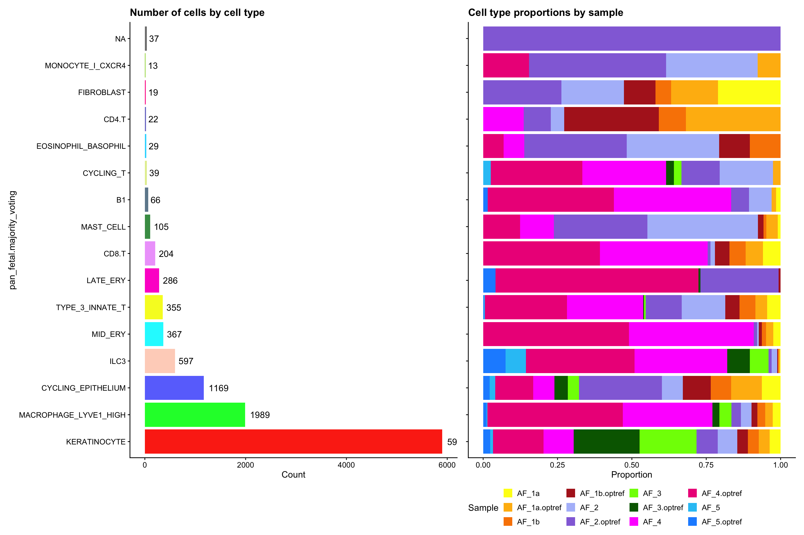
p1 + p3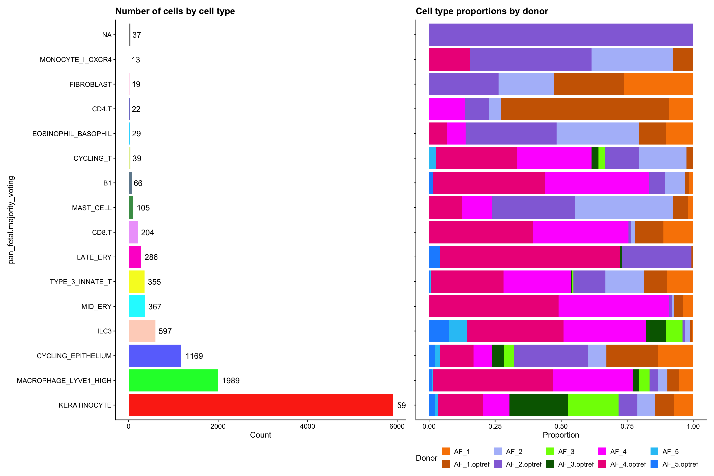
p1 <- seu@meta.data %>%
ggplot(aes(x = Donor, fill = pan_fetal.majority_voting)) +
geom_bar() +
theme_cowplot(12) +
scale_fill_manual(values = ALL_CELL_TYPE_COLOURS[levels(seu$pan_fetal.majority_voting)]) +
no_legend +
rotate_x_labels_45 +
ggtitle("Number of cells per cell type by donor")
p2 <- seu@meta.data %>%
ggplot(aes(x = Donor, fill = pan_fetal.majority_voting)) +
geom_bar(position = "fill") +
theme_cowplot(12) +
scale_fill_manual(values = ALL_CELL_TYPE_COLOURS[levels(seu$pan_fetal.majority_voting)]) +
guides(fill = guide_legend(ncol = 1)) +
rotate_x_labels_45 +
ggtitle("Propotion of cell types by donor")
p1 + p2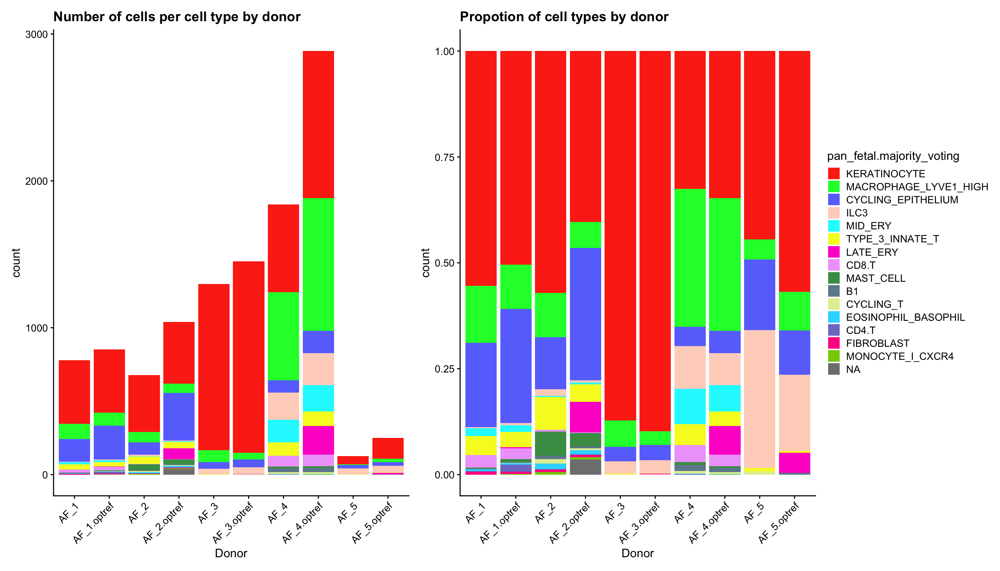
seu@meta.data %>% ggplot(aes(x = log10(nCount_RNA), y = Donor, fill = Donor)) +
geom_density_ridges() +
theme_ridges() +
theme(legend.position = "none") +
scale_fill_manual(values = ALL_DONORS_COLOURS)Picking joint bandwidth of 0.129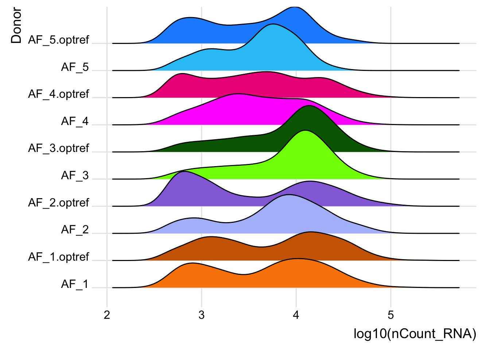
seu@meta.data %>% ggplot(aes(x = log10(nFeature_RNA), y = Donor, fill = Donor)) +
geom_density_ridges() +
theme_ridges() +
theme(legend.position = "none") +
scale_fill_manual(values = ALL_DONORS_COLOURS)Picking joint bandwidth of 0.0884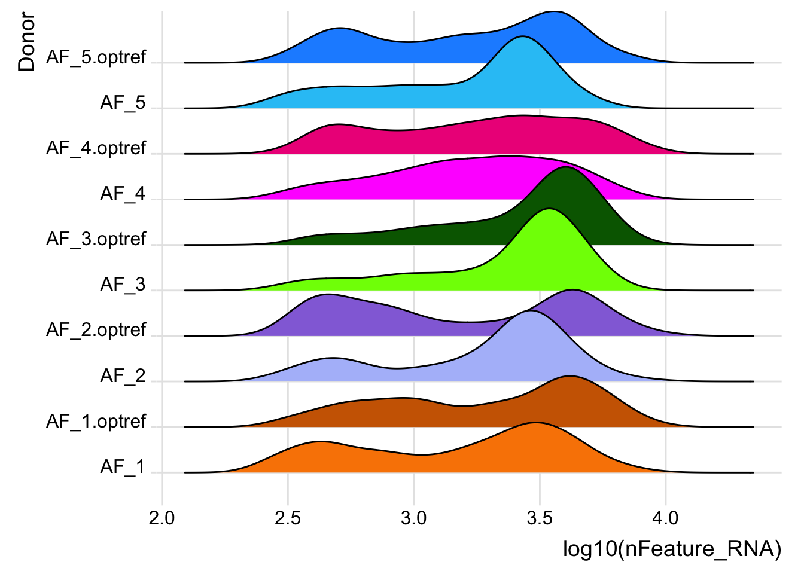
seu_comparison <- seu
dim(seu_comparison)[1] 31669 11199# remove any cells with an NA value for the prob.vote metric of interest
summary(seu_comparison$pan_fetal.prob_vote) Min. 1st Qu. Median Mean 3rd Qu. Max. NA's
0.00000 0.09102 0.88829 0.61891 0.99883 1.00000 37 seu_comparison <- seu_comparison[,!is.na(seu_comparison$pan_fetal.prob_vote)]
dim(seu_comparison)[1] 31669 11162seu_comparison$original_colname <- colnames(seu_comparison)
seu_comparison$cellname <- gsub("_optref", "", colnames(seu_comparison))
seu_comparison$is_optref <- !(seu_comparison$Dataset %in% c("dataset_01", "dataset_03", "dataset_04"))
filtered <- seu_comparison@meta.data %>% group_by(cellname) %>% filter(n() > 1)
seu_comparison <- seu_comparison[,filtered$original_colname]optref_meta <- seu_comparison@meta.data %>% subset(is_optref == TRUE)
colnames(optref_meta) <- paste0(colnames(optref_meta), "_optref")
rownames(optref_meta) <- optref_meta$cellname_optref
usual_meta <- seu_comparison@meta.data %>% subset(is_optref == FALSE)
rownames(usual_meta) <- usual_meta$cellname
comp_meta <- cbind(usual_meta, optref_meta)plotPerformanceAlluvial <- function(var_to_use) {
alluvial_df <- createAlluvialLongDF(rownames(comp_meta),
comp_meta[,var_to_use],
comp_meta[,paste0(var_to_use, "_optref")])
alluvial_df$donor_name <- comp_meta[alluvial_df$names,]$Donor
vals <- as.numeric(levels(alluvial_df$label_type))[alluvial_df$label_type]
if (var_to_use == "pan_fetal.prob_vote" | var_to_use == "pan_fetal.prob_pred") {
breaks <- seq(0, 1, by = 0.1)
} else if (var_to_use == "pan_fetal.decision_vote" | var_to_use == "pan_fetal.decision_pred") {
breaks <- seq(-20, 40, by = 5)
} else {
breaks <- seq(floor(min(vals)), ceiling(max(vals)), by = 10)
}
alluvial_df$label_group <- cut(vals, breaks=breaks, dig.lab=10)
for (curr_name in unique(alluvial_df$donor_name)) {
p3 <- ggplot(alluvial_df[alluvial_df$donor_name == curr_name,],
aes(x = label, alluvium = names, stratum = label_group, fill = label_group,
label = label_group)) +
geom_flow(stat = "alluvium", lode.guidance = "backward", alpha = 0.5,
segments = 100) +
geom_stratum(alpha = 0.5) +
theme_cowplot(12) +
theme(legend.position = "none") +
ggtitle(curr_name) +
geom_text(stat = "stratum", size = 4) +
scale_x_discrete(labels = c("Standard", "Optimised")) +
ylab("Number of cells") + xlab("Reference Used")
rotate_x_labels_45
print(p3)
}
}
plotPerformanceAlluvial("pan_fetal.prob_vote")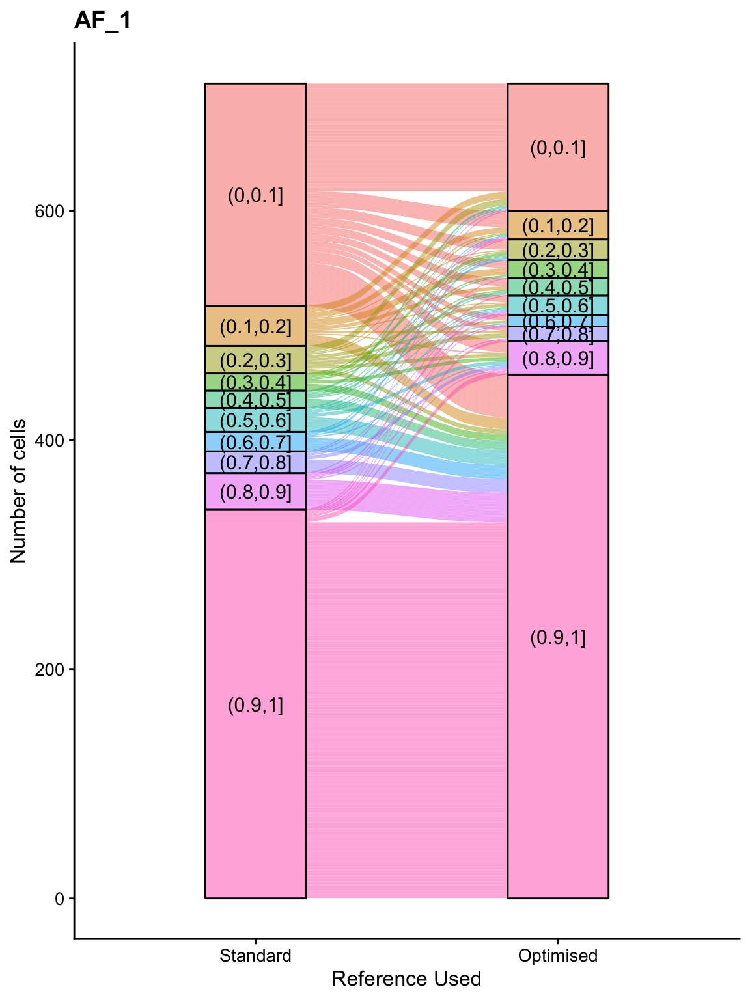
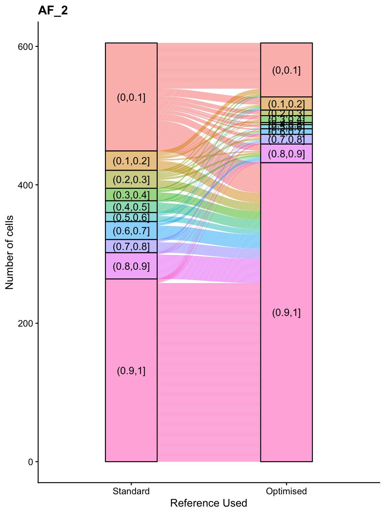
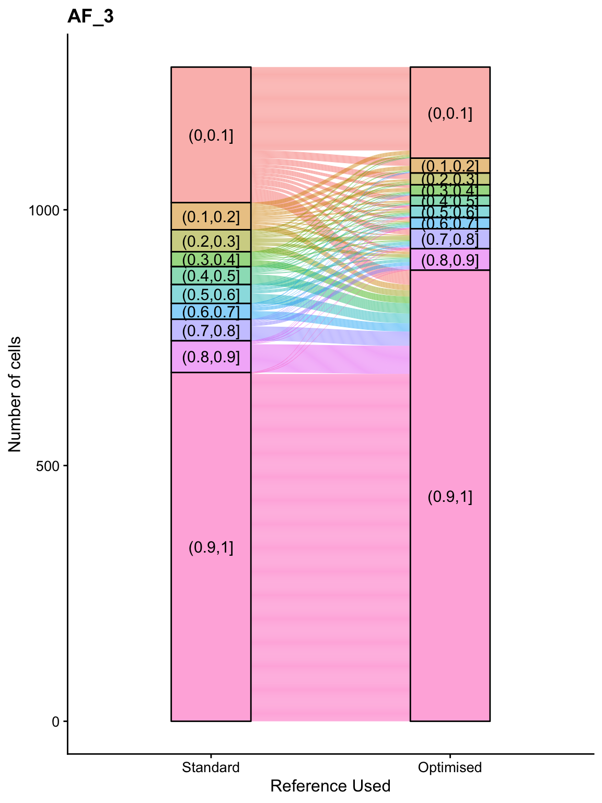
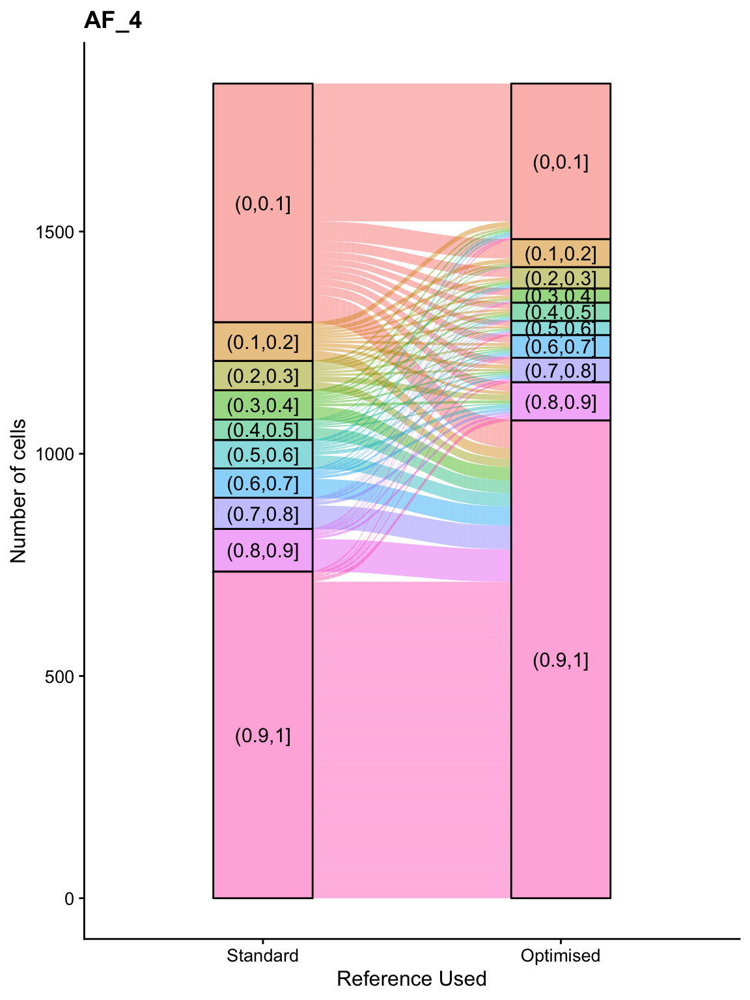
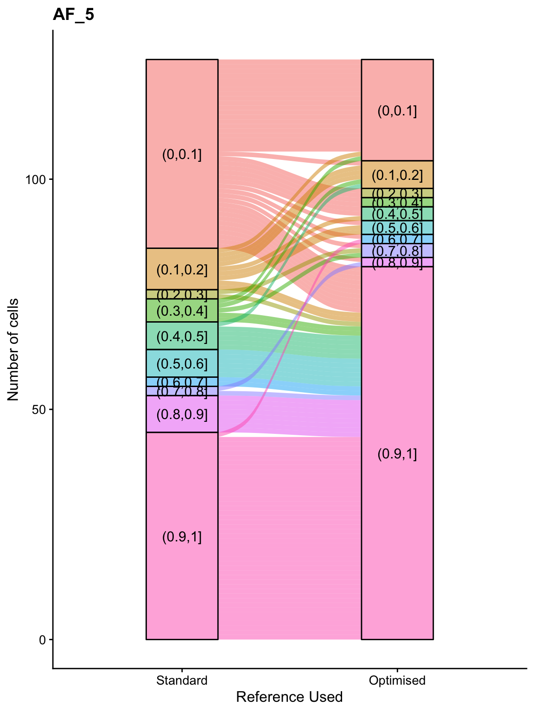
sessioninfo::session_info()─ Session info ───────────────────────────────────────────────────────────────
setting value
version R version 4.5.0 (2025-04-11)
os macOS 26.6
system aarch64, darwin20
ui X11
language (EN)
collate en_US.UTF-8
ctype en_US.UTF-8
tz Australia/Melbourne
date 2026-08-05
pandoc 3.8.3 @ /Applications/RStudio.app/Contents/Resources/app/quarto/bin/tools/aarch64/ (via rmarkdown)
quarto 1.9.38 @ /Applications/RStudio.app/Contents/Resources/app/quarto/bin/quarto
─ Packages ───────────────────────────────────────────────────────────────────
! package * version date (UTC) lib source
P abind 1.4-8 2024-09-12 [?] RSPM
P beachmat 2.26.0 2025-10-29 [?] Bioconduc~
P beeswarm 0.4.0 2021-06-01 [?] RSPM
P Biobase * 2.70.0 2025-10-29 [?] Bioconduc~
P BiocGenerics * 0.56.0 2025-10-29 [?] Bioconduc~
P BiocManager 1.30.27 2025-11-14 [?] RSPM
P BiocNeighbors 2.4.0 2025-10-29 [?] Bioconduc~
P BiocParallel 1.44.0 2025-10-29 [?] Bioconduc~
P BiocSingular 1.26.1 2025-11-17 [?] Bioconduc~
P bluster 1.20.0 2025-10-29 [?] Bioconduc~
P bslib 0.10.0 2026-01-26 [?] RSPM
P cachem 1.1.0 2024-05-16 [?] RSPM
P callr 3.7.6 2024-03-25 [?] CRAN (R 4.5.0)
P cli 3.6.6 2026-04-09 [?] RSPM
P cluster 2.1.8.1 2025-03-12 [?] CRAN (R 4.5.0)
P clustree * 0.5.1 2023-11-05 [?] RSPM
P codetools 0.2-20 2024-03-31 [?] CRAN (R 4.5.0)
colorspace 2.1-2 2025-09-22 [1] RSPM (R 4.5.0)
P cowplot * 1.2.0 2025-07-07 [?] RSPM
P data.table 1.18.2.1 2026-01-27 [?] RSPM
DelayedArray 0.36.1 2026-03-31 [1] https://bioc-release.r-universe.dev (R 4.5.3)
P deldir 2.0-4 2024-02-28 [?] RSPM
P digest 0.6.39 2025-11-19 [?] RSPM
dplyr * 1.2.0 2026-02-03 [1] RSPM (R 4.5.0)
P dqrng 0.4.1 2024-05-28 [?] CRAN (R 4.5.0)
P edgeR 4.8.2 2025-12-23 [?] https://bioc-release.r-universe.dev (R 4.5.2)
P egg * 0.4.5 2019-07-13 [?] RSPM
P evaluate 1.0.5 2025-08-27 [?] RSPM
P farver 2.1.2 2024-05-13 [?] RSPM
P fastmap 1.2.0 2024-05-15 [?] RSPM
P fitdistrplus 1.2-6 2026-01-24 [?] RSPM
P fs 2.1.0 2026-04-18 [?] RSPM
P future 1.69.0 2026-01-16 [?] RSPM
P future.apply 1.20.1 2025-12-09 [?] RSPM
P generics * 0.1.4 2025-05-09 [?] CRAN (R 4.5.0)
P GenomicRanges * 1.62.1 2025-12-08 [?] Bioconduc~
P getPass 0.2-4 2023-12-10 [?] CRAN (R 4.5.0)
P ggalluvial * 0.12.5 2023-02-22 [?] RSPM
P ggbeeswarm * 0.7.3 2025-11-29 [?] RSPM
P ggforce 0.5.0 2025-06-18 [?] RSPM
P ggplot2 * 4.0.2 2026-02-03 [?] RSPM
P ggraph * 2.2.2 2025-08-24 [?] RSPM
P ggrepel * 0.9.6 2024-09-07 [?] CRAN (R 4.5.0)
P ggridges * 0.5.7 2025-08-27 [?] RSPM
P git2r 0.36.2 2025-03-29 [?] CRAN (R 4.5.0)
P globals 0.19.0 2026-02-02 [?] RSPM
P glue 1.8.0 2024-09-30 [?] RSPM
P goftest 1.2-3 2021-10-07 [?] CRAN (R 4.5.0)
P graphlayouts 1.2.2 2025-01-23 [?] RSPM
P gridExtra * 2.3 2017-09-09 [?] RSPM
P gtable 0.3.6 2024-10-25 [?] RSPM
P here * 1.0.2 2025-09-15 [?] RSPM
P htmltools 0.5.9 2025-12-04 [?] RSPM
P htmlwidgets 1.6.4 2023-12-06 [?] RSPM
P httpuv 1.6.16 2025-04-16 [?] CRAN (R 4.5.0)
P httr 1.4.7 2023-08-15 [?] RSPM
P ica 1.0-3 2022-07-08 [?] CRAN (R 4.5.0)
P igraph 2.2.1 2025-10-27 [?] RSPM
P IRanges * 2.44.0 2025-10-29 [?] Bioconduc~
P irlba 2.3.7 2026-01-30 [?] RSPM
P jquerylib 0.1.4 2021-04-26 [?] RSPM
P jsonlite 2.0.0 2025-03-27 [?] RSPM
P KernSmooth 2.23-26 2025-01-01 [?] CRAN (R 4.5.0)
P knitr 1.51 2025-12-20 [?] RSPM
P labeling 0.4.3 2023-08-29 [?] RSPM
P later 1.4.5 2026-01-08 [?] RSPM
P lattice 0.22-7 2025-04-02 [?] RSPM
P lazyeval 0.2.2 2019-03-15 [?] RSPM
leiden 0.4.3.1 2023-11-17 [1] RSPM (R 4.5.0)
P lifecycle 1.0.5 2026-01-08 [?] RSPM
P limma 3.66.0 2025-10-29 [?] Bioconduc~
P listenv 0.10.0 2025-11-02 [?] RSPM
P lmtest 0.9-40 2022-03-21 [?] CRAN (R 4.5.0)
P locfit 1.5-9.12 2025-03-05 [?] RSPM
P magrittr 2.0.4 2025-09-12 [?] RSPM
P MASS 7.3-65 2025-02-28 [?] CRAN (R 4.5.0)
P Matrix 1.7-4 2025-08-28 [?] RSPM
P MatrixGenerics * 1.22.0 2025-10-29 [?] Bioconduc~
P matrixStats * 1.5.0 2025-01-07 [?] RSPM
P memoise 2.0.1 2021-11-26 [?] RSPM
P metapod 1.18.0 2025-10-29 [?] Bioconduc~
P mime 0.13 2025-03-17 [?] RSPM
P miniUI 0.1.2 2025-04-17 [?] CRAN (R 4.5.0)
P nlme 3.1-168 2025-03-31 [?] CRAN (R 4.5.0)
P otel 0.2.0 2025-08-29 [?] RSPM
P parallelly 1.46.1 2026-01-08 [?] RSPM
P patchwork * 1.3.2 2025-08-25 [?] RSPM
P pbapply 1.7-4 2025-07-20 [?] RSPM
P pillar 1.11.1 2025-09-17 [?] RSPM
P pkgconfig 2.0.3 2019-09-22 [?] RSPM
P plotly 4.12.0 2026-01-24 [?] RSPM
P plyr 1.8.9 2023-10-02 [?] RSPM
P png 0.1-8 2022-11-29 [?] RSPM
P Polychrome * 1.5.4 2025-04-06 [?] RSPM
P polyclip 1.10-7 2024-07-23 [?] CRAN (R 4.5.0)
P processx 3.8.6 2025-02-21 [?] CRAN (R 4.5.0)
P progressr 0.18.0 2025-11-06 [?] RSPM
P promises 1.5.0 2025-11-01 [?] RSPM
P ps 1.9.1 2025-04-12 [?] CRAN (R 4.5.0)
P purrr 1.2.1 2026-01-09 [?] RSPM
P R6 2.6.1 2025-02-15 [?] RSPM
P RANN 2.6.2 2024-08-25 [?] CRAN (R 4.5.0)
P RColorBrewer 1.1-3 2022-04-03 [?] RSPM
P Rcpp 1.1.1 2026-01-10 [?] RSPM
P RcppAnnoy 0.0.23 2026-01-12 [?] RSPM
P renv 1.1.7 2026-01-27 [?] RSPM
P reshape2 * 1.4.5 2025-11-12 [?] RSPM
P reticulate 1.44.1 2025-11-14 [?] RSPM
P rlang 1.2.0 2026-04-06 [?] RSPM
P rmarkdown 2.30 2025-09-28 [?] RSPM
P ROCR 1.0-12 2026-01-23 [?] RSPM
P rprojroot 2.1.1 2025-08-26 [?] RSPM
P rstudioapi 0.18.0 2026-01-16 [?] RSPM
P rsvd 1.0.5 2021-04-16 [?] RSPM
P Rtsne 0.17 2023-12-07 [?] CRAN (R 4.5.0)
P S4Arrays 1.10.1 2025-12-08 [?] Bioconduc~
S4Vectors * 0.48.1 2026-04-04 [1] https://bioc-release.r-universe.dev (R 4.5.3)
P S7 0.2.1 2025-11-14 [?] RSPM
P sass 0.4.10 2025-04-11 [?] RSPM
P ScaledMatrix 1.18.0 2025-10-29 [?] Bioconduc~
P scales 1.4.0 2025-04-24 [?] RSPM
P scater * 1.38.0 2025-10-29 [?] Bioconduc~
P scattermore 1.2 2023-06-12 [?] CRAN (R 4.5.0)
P scatterplot3d 0.3-44 2023-05-05 [?] RSPM
P scran * 1.38.0 2025-10-29 [?] Bioconduc~
P sctransform 0.4.3 2026-01-10 [?] RSPM
P scuttle * 1.20.0 2025-10-29 [?] Bioconduc~
P Seqinfo * 1.0.0 2025-10-29 [?] Bioconduc~
P sessioninfo * 1.2.3 2025-02-05 [?] RSPM
Seurat * 4.4.0 2024-01-10 [1] https://satijalab.r-universe.dev (R 4.5.0)
SeuratObject * 4.1.4 2023-09-27 [1] https://satijalab.r-universe.dev (R 4.5.0)
P shiny 1.12.1 2025-12-09 [?] RSPM
P SingleCellExperiment * 1.32.0 2025-10-29 [?] Bioconduc~
P sp 2.2-0 2025-02-01 [?] CRAN (R 4.5.0)
P SparseArray 1.10.8 2025-12-18 [?] Bioconduc~
P spatstat.data 3.1-9 2025-10-18 [?] RSPM
P spatstat.explore 3.7-0 2026-01-22 [?] RSPM
P spatstat.geom 3.7-0 2026-01-20 [?] RSPM
P spatstat.random 3.4-4 2026-01-21 [?] RSPM
P spatstat.sparse 3.1-0 2024-06-21 [?] CRAN (R 4.5.0)
P spatstat.univar 3.1-6 2026-01-17 [?] RSPM
P spatstat.utils 3.2-1 2026-01-10 [?] RSPM
P statmod 1.5.1 2025-10-09 [?] RSPM
P stringi 1.8.7 2025-03-27 [?] RSPM
P stringr * 1.6.0 2025-11-04 [?] RSPM
P SummarizedExperiment * 1.40.0 2025-10-29 [?] Bioconduc~
P survival 3.8-6 2026-01-16 [?] RSPM
P tensor 1.5.1 2025-06-17 [?] RSPM
P tibble 3.3.1 2026-01-11 [?] RSPM
P tidygraph 1.3.1 2024-01-30 [?] RSPM
P tidyr 1.3.2 2025-12-19 [?] RSPM
P tidyselect 1.2.1 2024-03-11 [?] RSPM
P tweenr 2.0.3 2024-02-26 [?] RSPM
P uwot 0.2.4 2025-11-10 [?] RSPM
P vctrs 0.7.1 2026-01-23 [?] RSPM
P vipor 0.4.7 2023-12-18 [?] RSPM
P viridis * 0.6.5 2024-01-29 [?] RSPM
P viridisLite * 0.4.2 2023-05-02 [?] RSPM
P whisker 0.4.1 2022-12-05 [?] CRAN (R 4.5.0)
P withr 3.0.2 2024-10-28 [?] RSPM
P workflowr * 1.7.2 2025-08-18 [?] RSPM
P xfun 0.56 2026-01-18 [?] RSPM
P xtable 1.8-4 2019-04-21 [?] RSPM
P XVector 0.50.0 2025-10-29 [?] Bioconduc~
P yaml 2.3.12 2025-12-10 [?] RSPM
P zoo 1.8-15 2025-12-15 [?] RSPM
[1] <project>/renv/library/macos/R-4.5/aarch64-apple-darwin20
[2] <renv-cache>/sandbox/macos/R-4.5/aarch64-apple-darwin20/4cd76b74
* ── Packages attached to the search path.
P ── Loaded and on-disk path mismatch.
──────────────────────────────────────────────────────────────────────────────
sessionInfo()R version 4.5.0 (2025-04-11)
Platform: aarch64-apple-darwin20
Running under: macOS 26.6
Matrix products: default
BLAS: /Library/Frameworks/R.framework/Versions/4.5-arm64/Resources/lib/libRblas.0.dylib
LAPACK: /Library/Frameworks/R.framework/Versions/4.5-arm64/Resources/lib/libRlapack.dylib; LAPACK version 3.12.1
locale:
[1] en_US.UTF-8/en_US.UTF-8/en_US.UTF-8/C/en_US.UTF-8/en_US.UTF-8
time zone: Australia/Melbourne
tzcode source: internal
attached base packages:
[1] stats4 stats graphics grDevices datasets utils methods
[8] base
other attached packages:
[1] scran_1.38.0 Polychrome_1.5.4
[3] viridis_0.6.5 viridisLite_0.4.2
[5] reshape2_1.4.5 ggalluvial_0.12.5
[7] dplyr_1.2.0 sessioninfo_1.2.3
[9] here_1.0.2 egg_0.4.5
[11] gridExtra_2.3 patchwork_1.3.2
[13] cowplot_1.2.0 ggridges_0.5.7
[15] ggbeeswarm_0.7.3 ggrepel_0.9.6
[17] stringr_1.6.0 scater_1.38.0
[19] scuttle_1.20.0 SingleCellExperiment_1.32.0
[21] SummarizedExperiment_1.40.0 Biobase_2.70.0
[23] GenomicRanges_1.62.1 Seqinfo_1.0.0
[25] IRanges_2.44.0 S4Vectors_0.48.1
[27] BiocGenerics_0.56.0 generics_0.1.4
[29] MatrixGenerics_1.22.0 matrixStats_1.5.0
[31] clustree_0.5.1 ggraph_2.2.2
[33] ggplot2_4.0.2 SeuratObject_4.1.4
[35] Seurat_4.4.0 workflowr_1.7.2
loaded via a namespace (and not attached):
[1] RcppAnnoy_0.0.23 splines_4.5.0 later_1.4.5
[4] tibble_3.3.1 polyclip_1.10-7 lifecycle_1.0.5
[7] edgeR_4.8.2 rprojroot_2.1.1 globals_0.19.0
[10] processx_3.8.6 lattice_0.22-7 MASS_7.3-65
[13] magrittr_2.0.4 limma_3.66.0 plotly_4.12.0
[16] sass_0.4.10 rmarkdown_2.30 jquerylib_0.1.4
[19] yaml_2.3.12 metapod_1.18.0 httpuv_1.6.16
[22] otel_0.2.0 sctransform_0.4.3 sp_2.2-0
[25] spatstat.sparse_3.1-0 reticulate_1.44.1 pbapply_1.7-4
[28] RColorBrewer_1.1-3 abind_1.4-8 Rtsne_0.17
[31] purrr_1.2.1 tweenr_2.0.3 git2r_0.36.2
[34] irlba_2.3.7 listenv_0.10.0 spatstat.utils_3.2-1
[37] goftest_1.2-3 dqrng_0.4.1 spatstat.random_3.4-4
[40] fitdistrplus_1.2-6 parallelly_1.46.1 leiden_0.4.3.1
[43] codetools_0.2-20 DelayedArray_0.36.1 ggforce_0.5.0
[46] tidyselect_1.2.1 farver_2.1.2 ScaledMatrix_1.18.0
[49] spatstat.explore_3.7-0 jsonlite_2.0.0 BiocNeighbors_2.4.0
[52] tidygraph_1.3.1 progressr_0.18.0 survival_3.8-6
[55] tools_4.5.0 ica_1.0-3 Rcpp_1.1.1
[58] glue_1.8.0 SparseArray_1.10.8 xfun_0.56
[61] withr_3.0.2 BiocManager_1.30.27 fastmap_1.2.0
[64] bluster_1.20.0 callr_3.7.6 digest_0.6.39
[67] rsvd_1.0.5 R6_2.6.1 mime_0.13
[70] colorspace_2.1-2 scattermore_1.2 tensor_1.5.1
[73] spatstat.data_3.1-9 tidyr_1.3.2 renv_1.1.7
[76] data.table_1.18.2.1 graphlayouts_1.2.2 httr_1.4.7
[79] htmlwidgets_1.6.4 S4Arrays_1.10.1 scatterplot3d_0.3-44
[82] whisker_0.4.1 uwot_0.2.4 pkgconfig_2.0.3
[85] gtable_0.3.6 lmtest_0.9-40 S7_0.2.1
[88] XVector_0.50.0 htmltools_0.5.9 scales_1.4.0
[91] png_0.1-8 spatstat.univar_3.1-6 knitr_1.51
[94] rstudioapi_0.18.0 nlme_3.1-168 cachem_1.1.0
[97] zoo_1.8-15 KernSmooth_2.23-26 parallel_4.5.0
[100] miniUI_0.1.2 vipor_0.4.7 pillar_1.11.1
[103] grid_4.5.0 vctrs_0.7.1 RANN_2.6.2
[106] promises_1.5.0 BiocSingular_1.26.1 beachmat_2.26.0
[109] xtable_1.8-4 cluster_2.1.8.1 beeswarm_0.4.0
[112] evaluate_1.0.5 locfit_1.5-9.12 cli_3.6.6
[115] compiler_4.5.0 rlang_1.2.0 future.apply_1.20.1
[118] labeling_0.4.3 ps_1.9.1 getPass_0.2-4
[121] plyr_1.8.9 fs_2.1.0 stringi_1.8.7
[124] deldir_2.0-4 BiocParallel_1.44.0 lazyeval_0.2.2
[127] spatstat.geom_3.7-0 Matrix_1.7-4 future_1.69.0
[130] statmod_1.5.1 shiny_1.12.1 ROCR_1.0-12
[133] igraph_2.2.1 memoise_2.0.1 bslib_0.10.0